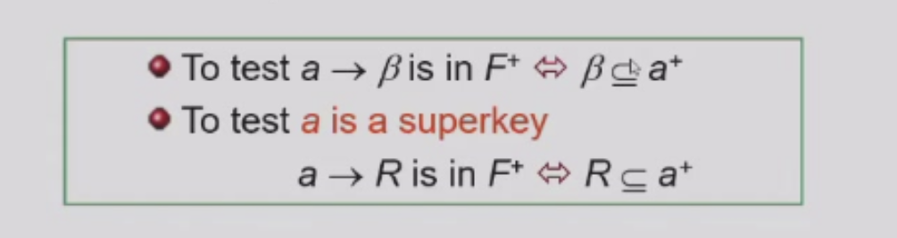
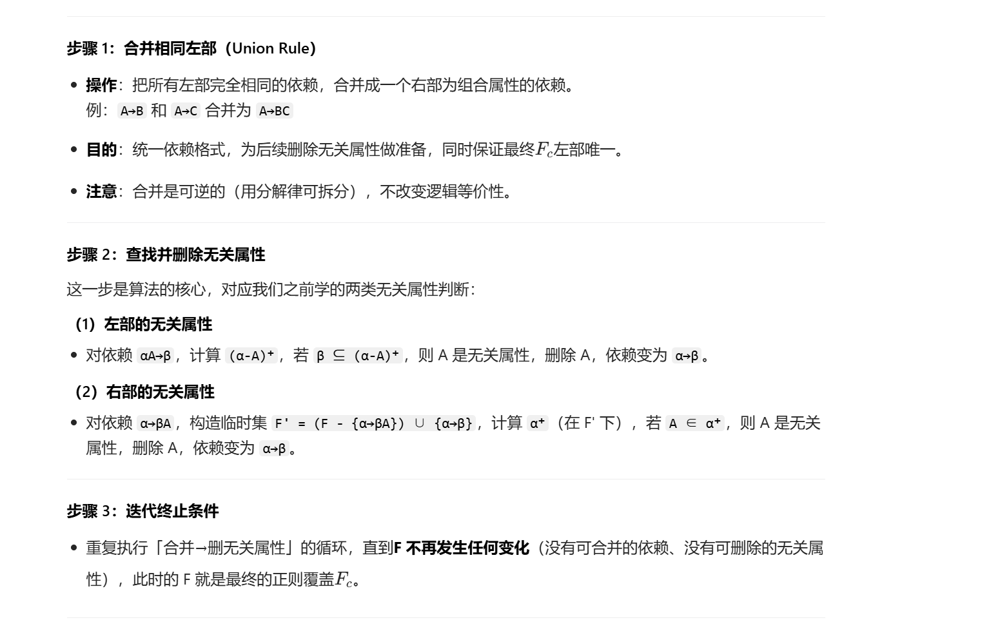
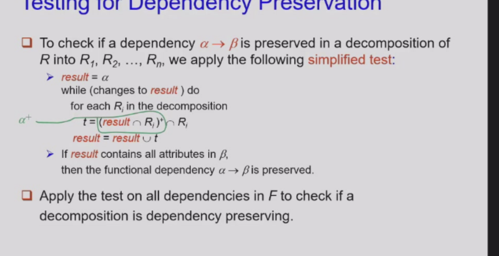
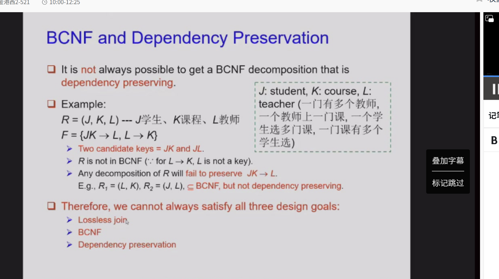

如何设计数据库（什么是好的）¶
第一范式¶
这三张PPT都在讲关系型数据库设计中的「第一范式（1NF, First Normal Form）」——这是数据库设计最基础、也是最核心的规则之一。我帮你逐张拆解，再总结它的本质和意义：
1NF的核心定义¶
这张PPT先铺垫了两个关键概念，再给出1NF的定义：
-
什么是「原子性（Atomic）」？ 一个数据的「域（Domain，可理解为“某个字段能存的值的集合”）」是原子的，意思是：这个域里的每一个值，在数据库设计的视角下，都是不可再拆分的最小单元。 反过来，PPT举了三种「非原子域」的典型例子：
- 复合属性：比如“姓名”字段同时存了“姓+名”（如“张三”），或“地址”字段存了“省/市/区/街道”的完整信息；
- 多值属性：比如一个人的多个手机号，用逗号分隔存在同一个字段里（如
138xxxx,139xxxx）； - 复杂数据类型：比如直接存面向对象的对象、JSON数组这类非结构化数据。
-
什么是第一范式（1NF）？ 一个数据库表（关系模式
R）满足1NF，当且仅当：表中所有属性（字段）的域都是原子的。 换句话说：表中「每一行、每一列」都只能存一个“不可拆分的值”——不能存多个值，也不能存需要再拆分的复合值。 -
为什么关系数据库强制要求1NF？ 关系型数据库的底层设计（SQL的增删改查、约束、索引），完全建立在“所有数据都是原子的”这个前提上。如果不满足1NF，SQL操作会变得异常复杂，甚至无法实现。
怎么处理「非原子值」？¶
现实中我们经常遇到复合属性、多值属性，这张PPT讲了几种处理方式，以及它们的优缺点：
-
复合属性的处理：拆成多个独立字段 比如把“姓名”拆成“姓”和“名”两个字段，把“地址”拆成“省/市/区/街道”四个字段，每个字段的值就变成原子的了。
-
多值属性的三种处理方式（以“手机号”为例）：
-
方式1：多字段存储（如
phon1, phon2, phon3...） 给每个可能的手机号单独开一个字段。缺点很明显：不知道用户到底有几个手机号，开少了不够用，开多了大部分字段是空的，浪费空间，查询时还要遍历所有字段，效率极低。 -
方式2：单独建关联表（如
phone(pname, phone)） 建一个单独的手机号表，用用户名（pname）关联，一个人多个手机号就存多条记录。这是最推荐的方式：完全满足1NF，灵活度高（多少个手机号都能存），查询和修改也很方便。 -
方式3：单字段存多个值（如
phones字段用逗号分隔） 这种方式看起来省事，但完全不满足1NF，而且有很多致命问题。
-
-
非原子存储的缺点：
- 存储逻辑复杂：需要额外的代码来解析字段里的多个值；
- 容易产生数据冗余：修改一个值时要修改整个字段，容易出错，也无法对单个值做约束；
- 查询效率低：比如要查“手机号以138开头的用户”，就不能直接用SQL的
WHERE phone LIKE '138%'，必须先拆分字段，写复杂的逻辑。
原子性的「相对性」——关键看你怎么用数据¶
这张PPT纠正了一个常见误区：很多人以为“字符串就是原子的”，但其实原子性不是绝对的，而是看你在业务中会不会拆分这个值来使用。
- 举个例子：学号是
CS0012或EE1127这种字符串。 - 如果你只把学号当成一个整体使用（比如查询、修改都直接用整个学号），那它就是原子的，没问题；
-
但如果你在业务中，需要从学号里提取前两位
CS/EE来判断院系，那这个学号的域就不是原子的了——因为你在业务逻辑里，把它拆成了“院系代码”和“编号”两部分来使用。 -
为什么这是坏设计？ 因为你把业务逻辑藏在了应用程序里，而不是数据库里：数据库只存了一个字符串，但业务要自己解析字符串来获取院系信息。这种设计的问题很多：
-
可维护性差：如果院系代码改了（比如
CS改成CSE），所有旧学号都要修改； - 无法做数据库约束：不能保证学号的前两位一定是合法的院系代码；
- 查询效率低，也容易出错。 正确的做法是：把“院系”单独存成一个字段，和“学号”分开，这样两个字段都是原子的，数据库也能做约束，查询也更方便。
核心总结¶
这三张PPT的本质，是在讲数据库设计的一个底层原则：
1NF的核心，是让数据的「含义」和「存储」完全对齐——每个字段存的，都应该是业务中需要直接使用的最小单元，而不是需要再拆分的复合信息。
1NF是所有更高范式（2NF、3NF、BCNF）的基础，它解决了“数据存储混乱”的问题，让数据库的操作更简单、高效、可靠。
设计范式¶
这两张PPT是数据库设计里的“前后呼应”，核心讲了两个关键问题：¶
- 为什么要设计范式？——糟糕的单表设计会带来什么问题？（第一张）
- 分解表的时候要注意什么？——什么是“有损分解”，为什么它是错的？（第二张）
关系数据库设计的陷阱（Pitfalls）¶
这张PPT的核心是说明「不规范的单表设计」会带来的问题，以及两种主流设计思路。
1. 坏设计的三大问题¶
关系数据库设计的目标，是找到一组“好的关系模式”（也就是合理的表结构）。如果设计得不好，会带来这些问题：
-
冗余存储（Redundant storage）：重复存储相同的数据。 比如例子里的
Lending-schema，把“支行信息（branch-name, branch-city, assets）”和“贷款信息（customer-name, loan-number, amount）”存在同一张表里。 结果就是：同一个支行的名称、城市、资产，会随着每一笔贷款记录重复存储，造成大量冗余。 -
更新/插入/删除异常（Anomalies）：冗余带来的一致性问题，分为三种：
- 更新异常：某支行的资产更新了，所有和这个支行相关的贷款记录都要改，漏改一条就会出现数据不一致。
- 插入异常：新开了一个支行，但还没有发放任何贷款，就没法插入这个支行的信息（因为
loan-number是主键，不能为空，没有贷款就没法存支行信息）。 - 删除异常：如果某支行的所有贷款都被客户还清了，对应的贷款记录被删除，这个支行的信息也会跟着消失，再也找不到了。
- 无法表示某些信息：比如上面说的“没有贷款的支行”，就没法在这张表里表示，这就是插入异常带来的后果。
2. 两种数据库设计方法¶
PPT里提到了两种主流设计思路：
- 自顶向下（Top-down）：先定义业务里的实体和关系（比如支行、客户、贷款是三个实体），再根据实体设计表结构。
- 自底向上（Bottom-up，PPT里的
Button-up是笔误）：先把所有属性放在一个“泛关系（Universal relation）”里（比如例子里的Lending-schema就是一个泛关系），再通过分解（Decomposition），把它拆成多个合理的小表，得到好的模式。
这里的关键是：分解不是随便拆的，拆不好会带来新的问题，这就引出了第二张PPT的内容。
有损连接分解的例子（Non Lossless-Join Decomposition）¶
这张PPT是一个反面教材，说明分解表的时候，如果方式不对，会导致“数据混乱”，也就是“有损分解”。
1. 先搞懂核心概念：什么是「无损连接分解」？¶
把一个关系模式R分解成R1和R2之后，对于任何可能的实例数据r，都必须满足：
r = Π_R1(r) ⨝ Π_R2(r)
也就是：把r投影到R1和R2上，再做自然连接，必须能100%还原原来的r，不多也不少。
满足这个条件的分解，叫「无损连接分解」；不满足的，就是「有损分解」。
2. 例子拆解：坏的分解方式¶
原关系R(A,B)的实例r有3行数据：
| A | B |
|-----|---|
| α | 1 |
| α | 2 |
| β | 1 |
现在把R拆成两个表：R1(A)和R2(B)，也就是只保留A列和只保留B列。
- 投影到
R1(A)的结果是：{α, β}（去重后的A值） - 投影到
R2(B)的结果是：{1, 2}（去重后的B值） 然后把这两个投影结果做自然连接（因为没有公共属性，自然连接就是笛卡尔积），得到的结果是： | A | B | |-----|---| | α | 1 | | α | 2 | | β | 1 | | β | 2 | 可以看到，结果比原来多了一行(β, 2)，这行数据在原来的r里根本不存在！ 也就是说，分解之后再连接，没法还原原来的数据，反而产生了错误的元组，这种分解就是有损分解，是完全不合法的，会导致数据混乱。
两张PPT的核心联系¶
这两张PPT是数据库设计里的“前后呼应”：
- 第一张说：不分解（用泛关系）会有冗余和异常问题，所以我们需要分解表。
- 第二张说：但分解不是随便拆的，必须保证是「无损连接分解」，不然会产生错误数据，反而比不分解更糟。
而我们常说的“范式（1NF/2NF/3NF/BCNF）”，本质上就是一套既消除冗余和异常，又保证分解无损的设计规则。
💡 补充一个实用判断方法：
对于二元分解（R分解成R1和R2），无损分解的条件是：
R1 ∩ R2 → R1 或者 R1 ∩ R2 → R2
也就是两个表的公共属性，必须是其中一个表的超键（能唯一标识元组的属性）。
比如如果原来的R是(A,B,C)，分解成R1(A,B)和R2(B,C)，只要B是其中一个表的键，那分解就是无损的，不会出现上面例子里的错误。
目标¶
一、核心目标：给数据库设计定一套“好坏标准+改造方法”¶
这套理论要解决两个核心问题：
1. 判断：一个现有的表（关系模式R）设计得“好不好”？¶
这里的“好形式（good form）”，指的是没有数据冗余、也没有更新/插入/删除异常的设计。 我们学范式（1NF/2NF/3NF/BCNF），本质上就是在学一套判断标准：用这些规则，就能一眼看出你的表有没有冗余、会不会出问题。
2. 改造：如果设计得不好，怎么“安全地”把它改好？¶
如果一个表设计得不好（比如之前的Lending-schema，把支行和贷款信息揉在一起），我们就要把它拆成多个小表{R₁, R₂, ..., Rₙ}，但这个“拆分”必须满足两个硬性要求：
- 每个拆出来的小表，自己都必须是“好形式”（没有冗余和异常）；
- 拆分必须是无损连接分解（lossless-join decomposition）——也就是拆分后，把这些小表再通过关联键（比如外键）连接起来，必须能100%还原原来的数据，不能像上一张PPT的坏例子那样，产生错误的“假数据”。
二、底层工具：这套理论靠什么实现？¶
我们用来“判断好坏”和“指导拆分”的核心工具，是两种依赖关系：
-
函数依赖（Functional Dependencies, FD） 最基础的依赖关系，比如“学号→姓名”：知道学号，就能唯一确定姓名。 我们学的2NF/3NF/BCNF，全都是基于函数依赖的，用来解决大部分的冗余和异常问题。
-
多值依赖（Multivalued Dependencies, MVD） 更复杂的依赖关系，用来处理函数依赖解决不了的场景，比如“一个学生选多门课、同时有多个兴趣爱好”这种情况，需要用4NF（基于多值依赖）来解决冗余问题。
三、一句话总结¶
这张PPT的逻辑是：
我们学范式、学函数依赖，就是为了给数据库设计一套“能判断好坏，也能指导改造”的完整方案，最终目的是设计出既无冗余、又不会丢失/产生错误数据的表结构。
函数依赖¶
这三张PPT核心讲的是函数依赖（Functional Dependency, FD）——关系数据库中属性之间的“决定关系”，是规范化理论的灵魂工具，能帮你判断表设计好坏、决定该不该拆表。
我分模块把它讲透，结合你之前学的“分解”“1NF”，形成完整逻辑链：
一、第一张：函数依赖的定义与本质¶
1. 核心定义¶
设 $R$ 是关系模式，$\alpha, \beta$ 是 $R$ 的属性子集。 若对任意合法关系 $r(R)$，只要两行数据 $t_1, t_2$ 在 $\alpha$ 上的值相同，就必然在 $\beta$ 上的值也相同，则称 $\alpha \to \beta$ 在 $R$ 上成立。 数学表达：$t_1[\alpha] = t_2[\alpha] \Rightarrow t_1[\beta] = t_2[\beta]$
人话翻译：
- $\alpha$ 叫“决定因素”，$\beta$ 叫“依赖因素”。
- 只要 $\alpha$ 定了，$\beta$ 就唯一确定了（类似数学里的 $y=f(x)$）。
- 比如：
学号 → 姓名→ 只要学号相同，姓名必然相同。
2. 右侧表格的直观验证¶
表中有4行数据（$\alpha, \beta, \gamma$ 三列）：
- 观察 $\alpha \to \beta$：
- $\alpha=a$ 时，$\beta=f$（第1行、第3行）；
- $\alpha=b$ 时，$\beta=h$；
- $\alpha=c$ 时，$\beta=f$。
- 没有出现“$\alpha$ 相同但 $\beta$ 不同”的情况，所以在这个实例中 $\alpha \to \beta$ 成立。
- 注意：这只是当前实例的依赖，要成为正式的函数依赖，必须满足“任意两行”，而非仅这4行。
二、第二张：函数依赖是“完整性约束”，以及如何判断不成立¶
1. 函数依赖的定位¶
- 它是一种完整性约束，描述属性间的固有语义关系（比如“一个学号只能对应一个姓名”）。
- 核心用途：
- 判断关系模式是否规范；
- 指导模式分解（拆表），消除冗余和异常。
2. 反例：$A \to B$ 不成立的情况¶
表 $r(A,B)$ 有3行数据： | A | B | |---|---| | 1 | 4 | | 1 | 5 | | 3 | 7 |
判断逻辑：
- 验证 $A \to B$：
- 第1行和第2行，$A$ 的值都是
1，但 $B$ 一个是4、一个是5。 - 出现了“$A$ 相同但 $B$ 不同”的情况，不满足定义，所以 $A \to B$ 绝对不成立。
- 验证 $B \to A$：
- $B=4$ 对应 $A=1$，$B=5$ 对应 $A=1$，$B=7$ 对应 $A=3$。
- 没有“$B$ 相同但 $A$ 不同”，在这个实例中 $B \to A$ 可能成立（注意：仅实例成立，不代表业务上永远成立，需看语义）。
核心结论： 函数依赖不成立的唯一条件——只要找到一对行，满足“决定因素相同，但依赖因素不同”，这个依赖就直接作废。
三、第三张：函数依赖 vs 键（Key），以及实际业务应用¶
这张图把你之前学的“键”和现在的“函数依赖”打通了，是理论的核心关联点。
1. 函数依赖是键的“泛化”¶
- 键（Key）：是一种特殊的函数依赖（能唯一标识整个表的行）。
- 超键（Superkey）：$K \to R$ 成立，即 $K$ 能决定所有属性（可能包含多余属性）。
- 候选键（Candidate key）：
- $K \to R$（能决定全表）；
- 最小性：$K$ 的任意真子集 $\alpha$，都不满足 $\alpha \to R$（不能再精简，精简了就没法决定全表）。
人话总结： 候选键 = 最小的决定全表的属性集（主键的候选者）。
2. 函数依赖能表达“键表达不了”的约束¶
键只能描述“谁能唯一标识行”，但函数依赖能描述更细的业务规则（比如“谁决定谁”）。
3. 你的PPT案例：Loan-info-schema¶
模式：Loan-info-schema = (customer-name, loan-number, branch-name, amount)
预期成立的函数依赖集 F：
loan-number → amount：一笔贷款只有一个金额；loan-number → branch-name：一笔贷款对应一个支行；(customer-name, loan-number) → amount：客户+贷款对应唯一金额；(customer-name, loan-number) → branch-name：客户+贷款对应唯一支行。
预期不成立的依赖：
loan-number → customer-name：一笔贷款可能对应多个客户（组合贷款），贷款号不能唯一确定客户名，所以不成立。
实际意义： 通过这些函数依赖，你能直接发现设计问题：
- 比如
loan-number → branch-name成立，说明支行信息依赖于贷款号，若和客户信息混在一张表，会造成冗余（支行信息重复存储），这就为后续“分解表”提供了明确依据。
四、整体逻辑总结¶
这三页PPT完整讲了函数依赖的三层意义：
- 定义：$\alpha \to \beta$ = “$\alpha$ 相同则 $\beta$ 必相同”，是属性间的语义规则；
- 判断：找反例——只要有一行“$\alpha$ 同 $\beta$ 不同”，依赖就不成立；
- 关联与应用：它是键的泛化，能表达更细的业务规则，是判断表设计好坏、指导拆表（分解）的核心依据。
简单说：函数依赖就是数据库的“语义规则手册”，照着它改表，才能设计出无冗余、数据一致的好表。
函数依赖应用¶
这两张PPT是函数依赖（FD）的核心应用指南，核心讲了两件事：
- 函数依赖的两大实际用途；
- 一个极其关键的概念区分：「关系实例满足F」 vs 「模式R上F成立」，这是数据库规范化设计的底层逻辑。
一、第一张PPT：用途1 —— 检验「具体关系实例r」是否满足F¶
1. 用途定义¶
给你一个具体的关系实例r（也就是一张真实的表），和一组函数依赖集F，你要检验：这个r是否符合F的约束，也就是r是不是「合法」的。 如果r符合所有F中的依赖，就称：r satisfies F（r满足F）。
2. 结合例子逐行验证¶
表r（5行4列，属性A,B,C,D）： | A | B | C | D | |----|----|----|----| | a1 | b1 | c1 | d1 | | a1 | b2 | c1 | d2 | | a2 | b2 | c2 | d2 | | a2 | b3 | c2 | d3 | | a3 | b3 | c2 | d4 |
给定F = { A→C, AB→D, ABC→D }，我们逐个验证：
- A→C：
- 找A值相同的行：A=a1的两行（第1、2行），C都是c1；A=a2的两行（第3、4行），C都是c2；A=a3只有1行，无冲突。
- ✅ 无反例，A→C在r中成立。
- AB→D：
- AB是A+B的组合，所有行的AB组合都是唯一的（(a1,b1)、(a1,b2)、(a2,b2)、(a2,b3)、(a3,b3)），没有AB相同但D不同的情况。
- ✅ 无反例，AB→D在r中成立。
- ABC→D：
- ABC组合所有行都是唯一的，自然满足「ABC相同则D相同」。
- ✅ 成立（补充：这个依赖是冗余的，因为AB→D已经成立，AB是ABC的子集，所以ABC→D是AB→D的逻辑推论，写不写都成立）。
3. 验证不成立的依赖（PPT右侧）¶
PPT里写了A↛B, A↛D, B↛A等，验证逻辑：
- A↛B：A=a1的两行，B分别是b1、b2，A相同但B不同 → 直接违反A→B的定义，所以A→B不成立。
- A↛D：A=a1的两行，D分别是d1、d2，A相同D不同 → 不成立。
- B↛A：B=b2的两行，A分别是a1、a2，B相同A不同 → 不成立。
- 以此类推，所有带↛的，都是因为存在「决定属性相同，但依赖属性不同」的反例，所以依赖不成立。
二、第二张PPT：用途2 —— 在「关系模式R」上定义约束F¶
1. 用途定义¶
函数依赖的第二个核心用途，是在关系模式R（表结构）上定义业务约束F：要求「所有可能的合法关系实例r」，都必须满足F。 只有当所有可能的r都满足F时，才称：F holds on R（F在R上成立）。
2. 核心概念区分（PPT的Note，重中之重）¶
| 概念 | 描述 | 判别难度 | 依据 |
|---|---|---|---|
| r satisfies F（r满足F） | 针对「某一个具体的表实例r」，检验它是否符合F | 容易：直接查r中有没有反例（决定属性相同但依赖属性不同） | 具体的表数据 |
| F holds on R（F在R上成立） | 针对「表结构R」，要求所有可能的合法r都必须满足F | 极难：无法通过单个r证明，只能由业务语义决定 | 业务规则、数据语义 |
3. 关键结论（PPT核心）¶
「某个具体的r满足F」，绝对不能推出「F在模式R上成立」。 模式R上的函数依赖F，是由定义R的业务语义决定的，不是由某个表实例决定的。
4. 结合Student例子理解¶
模式：Student(sno, sname, ssex, sage)（学号、姓名、性别、年龄）
- 语义上：学号sno唯一决定一个学生的所有信息，所以F = { sno → {sname, ssex, sage} } 在Student模式R上成立。
- 但：
sname → sno：语义上可能有重名（比如两个学生都叫「张三」），所以sname不能决定sno，这个依赖在R上不成立。sname → sage：重名的人年龄可能不同，所以也不成立。- 反例：如果Student表现在只有一个学生（sno=001, sname=张三, sage=20），这个r里
sname→sno和sname→sage都是成立的（没有反例），但绝对不能说这两个依赖在Student模式R上成立，因为未来插入另一个叫张三的学生（sno=002, sage=21），这个r就会违反依赖，说明依赖在R上根本不成立。
三、两个用途的完整逻辑链¶
- 设计阶段（用途2）：根据业务语义，在模式R上定义约束F（比如Student表定义sno→所有属性），这是数据库的业务规则，是表结构的一部分。
- 运行阶段（用途1）：每次插入/更新数据时，检验新的关系实例r是否满足F，如果不满足（比如插入两个相同sno的学生），就拒绝操作，保证数据一致性。
- 核心区别：F是「表结构的规则」，r是「表数据的实例」；规则约束所有数据，而不是某一条数据。
函数依赖的数学工具¶
这三张PPT是函数依赖理论的核心工具链，是关系数据库规范化（拆表、求候选键、消除冗余）的底层理论基础，我分模块给你彻底讲透，结合你之前学的知识串成完整逻辑：
一、第一张：平凡 vs 非平凡函数依赖（Trivial / Non-Trivial FD）¶
1. 核心定义¶
| 类型 | 数学定义 | 本质 | 特点 |
|---|---|---|---|
| 平凡函数依赖（Trivial） | $\alpha \to \beta$ 是平凡的，当且仅当 $\boldsymbol{\beta \subseteq \alpha}$（右边的属性集合是左边的子集） | 「废话式」依赖，对任何关系都100%成立，不需要业务语义约束 | 无实际约束意义，自动满足 |
| 非平凡函数依赖（Non-Trivial） | $\alpha \to \beta$ 是非平凡的，当且仅当 $\boldsymbol{\beta \not\subseteq \alpha}$（右边有属性不在左边中） | 「业务规则式」依赖，只有满足特定语义的关系才成立 | 是我们真正关心的、有实际约束意义的依赖 |
2. 直观例子¶
-
平凡依赖（废话依赖）： $A \to A$、$AB \to A$、
(customer-name, loan-number) → customer-name、customer-name → customer-name这些依赖的右边本来就包含在左边里，不管数据怎么存，都不可能违反，相当于数学里的「$1=1$」，没有任何约束价值。 -
非平凡依赖（业务规则）： $A \to B$、
loan-number → amount、sno → sname右边有不在左边的属性，必须满足业务语义（比如「一个贷款号对应唯一金额」），是我们用来约束数据、做规范化的核心依据。
3. 实际意义¶
在后续的规范化、闭包计算中，我们只需要关注非平凡函数依赖，因为平凡依赖是自动成立的，不需要额外处理。
二、第二张：函数依赖集的闭包 $F^+$（Closure）¶
1. 核心概念¶
给定一个显式定义的函数依赖集 $F$（也就是我们写在表结构里的业务规则，比如 $F={A \to B, B \to C}$），会有大量逻辑上被 $F$ 隐含的函数依赖（比如 $A \to C$、$A \to BC$、$AB \to C$ 等），这些依赖不需要显式写出来，因为从 $F$ 就能推导出来。
闭包 $F^+$ 的定义：
所有能被 $F$ 逻辑蕴涵的函数依赖的完整集合，包含三类依赖： 1. 原 $F$ 中显式定义的依赖； 2. 所有平凡函数依赖（自动成立，全部包含）； 3. 所有通过推理规则从 $F$ 推导出的非平凡依赖。
2. 直观例子¶
已知 $F = {A \to B, B \to C}$，它的闭包 $F^+$ 包含：
- 原 $F$：$A \to B$、$B \to C$
- 传递推导：$A \to C$、$A \to BC$
- 平凡依赖：$A \to A$、$B \to B$、$C \to C$、$AB \to A$、$AB \to B$、$AC \to C$、$ABC \to A$... 所有 $\beta \subseteq \alpha$ 的依赖
- 增补推导：$AC \to BC$、$AB \to BC$、$A \to BC$ 等
3. 核心问题¶
怎么系统、完整地求出 $F^+$？这就引出了第三张的Armstrong公理——求闭包的标准推理工具。
三、第三张：Armstrong公理（阿姆斯特朗公理）¶
1. 核心作用¶
提供一套保真（Sound）、完备（Complete）的推理规则，用来从已知的 $F$ 推导出完整的 $F^+$：
- 保真：用公理推出来的依赖，一定是真的（不会推出错误依赖）；
- 完备：所有真的、被 $F$ 蕴涵的依赖，都能通过公理推出来（不会漏掉任何一个真依赖）。
2. 三个基本公理（核心）¶
| 公理 | 数学表达 | 大白话解释 | 例子 |
|---|---|---|---|
| 自反律（Reflexivity） | 若 $\beta \subseteq \alpha$，则 $\alpha \to \beta$ | 右边是左边的子集，依赖自动成立（就是第一张的「平凡函数依赖」） | $AB \to A$、(sno, sname) → sno |
| 增补律（Augmentation，增广律） | 若 $\alpha \to \beta$，则 $\gamma\alpha \to \gamma\beta$（$\gamma\alpha = \gamma \cup \alpha$） | 给一个成立的依赖，左右两边同时加相同的属性，依赖依然成立 | 若 $A \to B$ 成立，则 $AC \to BC$ 成立 |
| 传递律（Transitivity） | 若 $\alpha \to \beta$ 且 $\beta \to \gamma$，则 $\alpha \to \gamma$ | A决定B，B决定C，那么A决定C（和数学传递性完全一致） | $A \to B$、$B \to C$ ⇒ $A \to C$；sno → sdept、sdept → dept_manager ⇒ sno → dept_manager |
3. 常用派生规则（三个基本公理的组合）¶
从三个基本公理可以推导出更实用的派生规则，简化计算：
- 合并律：若 $\alpha \to \beta$ 且 $\alpha \to \gamma$，则 $\alpha \to \beta\gamma$（$A \to B$、$A \to C$ ⇒ $A \to BC$）
- 分解律：若 $\alpha \to \beta\gamma$，则 $\alpha \to \beta$ 且 $\alpha \to \gamma$（$A \to BC$ ⇒ $A \to B$、$A \to C$）
- 伪传递律：若 $\alpha \to \beta$ 且 $\gamma\beta \to \delta$，则 $\gamma\alpha \to \delta$（$A \to B$、$CB \to D$ ⇒ $CA \to D$）
四、整体逻辑串讲（从分类到工具的完整链路）¶
这三张PPT是递进的、环环相扣的：
- 第一步：分类过滤：先区分「平凡（废话）」和「非平凡（业务规则）」依赖，帮我们过滤无意义的依赖，只关注真正有用的约束。
- 第二步：定义目标：提出「闭包 $F^+$」的概念，明确我们要找的是「所有真依赖的完整集合」，为后续计算定下目标。
- 第三步：提供工具：给出Armstrong公理，一套正确、完备的推理规则，用来从已知的 $F$ 推导出完整的 $F^+$，为后续的求候选键、无损分解、规范化到3NF/BCNF打下核心理论基础。
五、实际工程意义¶
这些理论不是纸上谈兵，是数据库设计的必备工具：
- 求候选键：用Armstrong公理计算「属性闭包」，找到能唯一标识全表的最小属性集（候选键）；
- 判断依赖有效性：验证一个业务规则是否被现有 $F$ 蕴涵（比如判断
sname → sno是否在 $F^+$ 里，就能知道姓名能不能当主键）； - 规范化设计：基于 $F^+$ 做无损连接分解，把大表拆成符合3NF/BCNF的小表，彻底消除冗余和操作异常；
- 数据完整性约束：用函数依赖定义业务规则，在插入/更新数据时自动校验，保证数据一致性。
进阶工具 and 例子¶
这两张PPT是Armstrong公理体系的「进阶工具包」，核心是：
- 给出从三大基本公理派生出来的快捷计算规则，大幅简化手动求闭包$F^+$的过程；
- 用一个完整例子演示这些规则的实际应用，把理论落地成可操作的计算步骤。
一、先讲第二张PPT：Armstrong公理的补充派生定律¶
核心定位¶
这三个规则不是新的公理，是从「自反律、增广律、传递律」三大基本公理推导出来的「快捷工具」，目的是让手动计算$F^+$不用每次都从最基础的公理一步步推，直接用派生规则一步到位。
三个补充规则（逐个拆解）¶
| 规则 | 数学定义 | 大白话解释 | 推导依据（从基本公理来） |
|---|---|---|---|
| 合并律（Union） | 若 $\alpha \to \beta$ 且 $\alpha \to \gamma$，则 $\alpha \to \beta\gamma$（$\beta\gamma=\beta\cup\gamma$） | 同一个决定因素α，能决定β、也能决定γ，那α就能同时决定β和γ的组合 | 增广律+传递律： 1. $\alpha\to\beta$ 增广得 $\alpha\to\alpha\beta$ 2. $\alpha\to\gamma$ 增广得 $\alpha\beta\to\beta\gamma$ 3. 传递得 $\alpha\to\beta\gamma$ |
| 分解律（Decomposition） | 若 $\alpha \to \beta\gamma$，则 $\alpha \to \beta$ 且 $\alpha \to \gamma$ | α能决定β和γ的组合，那α就能分别决定β、决定γ | 自反律+传递律： 1. 自反律：$\beta\gamma\to\beta$、$\beta\gamma\to\gamma$ 2. 已知 $\alpha\to\beta\gamma$，传递得 $\alpha\to\beta$、$\alpha\to\gamma$（PPT里给了完整证明） |
| 伪传递律（Pseudotransitivity） | 若 $\alpha \to \beta$ 且 $\gamma\beta \to \delta$，则 $\alpha\gamma \to \delta$ | A决定B，B和C一起决定D，那A和C一起就能决定D | 增广律+传递律： 1. $\alpha\to\beta$ 增广得 $\gamma\alpha\to\gamma\beta$ 2. 已知 $\gamma\beta\to\delta$，传递得 $\gamma\alpha\to\delta$ |
二、再讲第一张PPT：用派生规则计算$F^+$的完整例子¶
已知条件（和上一轮完全一致）¶
- 关系模式：$R = (A, B, C, G, H, I)$
- 初始函数依赖集：$F = { A \to B,\ A \to C,\ CG \to H,\ CG \to I,\ B \to H }$
- 目标：从$F$推导出闭包$F^+$中的新依赖，每个步骤都对应了上面的派生规则。
逐个拆解PPT里的推导¶
1. $A \to H$（基础传递律）¶
- 已知：$A \to B$（F中）、$B \to H$（F中）
- 传递律直接推导：$A\to B$ 且 $B\to H$ ⇒ $A\to H$
2. $AG \to I$（伪传递律的典型应用）¶
- 推导步骤（PPT展开了基础公理版，本质是伪传递律一步到位）：
- 已知 $A \to C$，用增广律加$G$：$AG \to CG$
- 已知 $CG \to I$（F中）
- 传递律：$AG \to CG$ 且 $CG \to I$ ⇒ $AG \to I$
- 对应伪传递律：$\alpha=A$，$\beta=C$，$\gamma=G$，$\delta=I$，直接得 $\alpha\gamma=AG \to \delta=I$
3. $AG \to H$（同样是伪传递律）¶
- 逻辑和$AG\to I$完全一致：
- $A \to C$ 增广得 $AG \to CG$
- 已知 $CG \to H$（F中）
- 传递得 $AG \to H$
4. $CG \to HI$（合并律的典型应用）¶
- 推导步骤（PPT展开了基础公理版，本质是合并律一步到位）：
- 已知 $CG \to H$、$CG \to I$（F中）
- 合并律直接得：$CG \to HI$
- PPT里的展开是从增广+传递推，合并律就是把这个过程简化成一步。
5. $A \to BC$（合并律的典型应用）¶
- 推导步骤（PPT展开了基础公理版，本质是合并律一步到位）：
- 已知 $A \to B$、$A \to C$（F中）
- 合并律直接得：$A \to BC$
标注对应¶
- 右上角椭圆：标注伪传递律，对应$AG\to I$、$AG\to H$的推导；
- 右下角方框：标注合并律，对应$CG\to HI$、$A\to BC$的推导。
三、整体逻辑与实际意义¶
逻辑串讲¶
这两张PPT是递进的：
- 先给出「派生规则」这个工具，解决手动计算$F^+$太繁琐的问题；
- 再用一个完整例子，演示工具的实际用法，把抽象的公理变成可操作的计算步骤。
实际工程/考试价值¶
这些派生规则是关系数据库规范化的核心工具：
- 合并/分解律：用来整理函数依赖集，把多右部依赖拆分、同左部依赖合并，方便求最小依赖集；
- 伪传递律：用来推导复杂依赖，是求候选键、判断无损分解的必备技能；
- 闭包计算：是后续做3NF/BCNF分解、消除数据冗余的前置步骤，是数据库理论考试的高频考点。
具体计算¶
这三张PPT是函数依赖闭包计算的「两种方案」+ 最终落地的标准算法，完整讲清了「怎么求闭包」「为什么实际不用完整$F^+$」「怎么用属性闭包解决超键/候选键问题」，是数据库规范化的核心实操指南。
一、第一张PPT：完整$F^+$的理论计算流程（仅理论，实际不用）¶
1. 算法步骤（严格对应Armstrong三大公理）¶
1. 初始化：F⁺ = F （把初始函数依赖集F直接放进闭包）
2. 重复迭代：
a. 遍历F⁺中每一个函数依赖f：
i. 对f应用【自反律】和【增补律】，生成所有可能的新依赖
ii. 把新依赖全部加入F⁺
b. 遍历F⁺中每一对函数依赖f₁、f₂：
i. 如果f₁和f₂可以用【传递律】组合出新依赖
ii. 把新依赖加入F⁺
3. 终止条件：直到F⁺不再有任何新依赖加入
2. 核心问题（PPT Note明确指出）¶
- 对于$n$个属性的关系模式，理论上最多有$2^n \times 2^n$个可能的函数依赖（左部$2^n$种组合，右部$2^n$种组合）。
- 当$n=6$（你之前的例子$R=(A,B,C,G,H,I)$），最大可能依赖数是$2^6 \times 2^6 = 4096$，手动计算完全不现实，仅存在理论意义。
- 因此PPT明确说明：后续会介绍更高效的替代方案（就是第二、三张的「属性闭包」）。
二、第二张PPT：属性闭包的定义与核心用途（替代完整$F^+$的方案）¶
1. 核心问题：怎么判断$\alpha$是不是超键？¶
- 方法1（理论法）：先求完整$F^+$，再看$\alpha$能否推出所有属性（即$\alpha \to R$）。但$F^+$计算量爆炸，完全不可行。
- 方法2（实际法）：求$\alpha$的属性闭包$\alpha^+$，这是工程中100%使用的标准方法。
2. 属性闭包的定义¶
给定属性集$\alpha$和函数依赖集$F$，$\alpha$在$F$下的闭包$\alpha^+$，是所有能被$\alpha$直接/间接函数决定的属性的集合。 数学本质：$\alpha^+ = { A \in R \mid \alpha \to A \text{ 能由}F\text{推出} }$
3. 超键的等价判定¶
$\alpha$是超键，当且仅当 $\boldsymbol{\alpha^+ = R}$（$\alpha$的闭包覆盖关系模式的所有属性）。 （候选键就是「最小的超键」，即$\alpha^+=R$且$\alpha$的任何真子集都不能推出$R$）
三、第三张PPT：属性闭包的标准计算算法（实际落地的唯一方法）¶
1. 算法伪代码（完全可手动执行）¶
// 输入：属性集a，函数依赖集F
// 输出：a的属性闭包a⁺
result := a; // 初始化：闭包初始就是a本身（自反律：a→a）
while (result发生变化) do // 迭代，直到没有新属性加入
for each 函数依赖 β→γ in F do // 遍历F中所有依赖
if β ⊆ result then // 如果左部β已经在闭包中（说明a能决定β）
result := result ∪ γ; // 把右部γ全部加入闭包（传递律：a→β且β→γ ⇒ a→γ）
a⁺ := result; // 最终result就是a的闭包
2. 极简例子演示（PPT中的示例）¶
已知：$F = { \alpha \to \beta,\ \beta \to \gamma }$，求$\alpha^+$
- 初始化：
result = {α} - 第一次遍历F：
- $\alpha \to \beta$：$\alpha \subseteq {α}$ ✅，把β加入 →
result = {α, β} - $\beta \to \gamma$：$\beta \subseteq {α, β}$ ✅，把γ加入 →
result = {α, β, γ}
- $\alpha \to \beta$：$\alpha \subseteq {α}$ ✅，把β加入 →
- 第二次遍历F：无新属性可加，循环终止
- 最终：$\alpha^+ = {α, β, γ}$
- 结论：$\alpha \to \gamma$ 成立（因为$\gamma \subseteq \alpha^+$）
3. 算法的核心优势¶
- 时间复杂度线性于属性数和依赖数，手动计算极快，完全替代了爆炸式的完整$F^+$计算；
- 自动覆盖所有Armstrong公理：自反律（初始化）、传递律（迭代加属性）、增补律/派生规则（算法隐含，无需手动操作）；
- 直接解决所有实际需求：求超键/候选键、判断函数依赖是否成立、验证无损分解、求最小依赖集。
四、三张PPT的完整逻辑链¶
- 第一张：给出完整$F^+$的理论计算方法，但明确指出其计算量爆炸，不适合实际使用；
- 第二张：提出「属性闭包」这个替代方案，定义其含义，并说明它是判断超键的高效方法；
- 第三张：给出属性闭包的标准计算算法，用极简例子演示，把理论落地成可操作的步骤。
五、补充：为什么属性闭包能完全替代完整$F^+$？¶
- 对于任意函数依赖$\alpha \to \beta$，$\alpha \to \beta$ 成立当且仅当 $\beta \subseteq \alpha^+$。
- 因此，我们不需要计算完整$F^+$，只需要计算对应属性的闭包，就能验证所有依赖、求候选键、做规范化，完全覆盖实际工程需求。

用途¶
这一页PPT是属性闭包算法的「三大核心用途总结」，把我们之前学的所有知识点做了最终落地，相当于给你一份「属性闭包的使用手册」，我给你逐条拆解清楚：
一、先明确核心前提¶
属性闭包算法，就是我们之前学的：
输入：属性集$\alpha$、函数依赖集$F$ 输出：$\alpha^+$（$\alpha$能直接/间接决定的所有属性的集合） 等价判定：$\alpha \to \beta$ 成立 $\iff \beta \subseteq \alpha^+$
这一页就是告诉你：这个算法在数据库设计里，到底能解决什么实际问题。
二、三大核心用途逐条拆解¶
1. 用途1：测试超键（Testing for a superkey）¶
对应问题：$\alpha$ 是不是超键？（$\alpha \to R$ 成立吗？）
- 操作方法：计算$\alpha$的属性闭包$\alpha^+$，检查$\alpha^+$是否包含$R$的所有属性（即$R \subseteq \alpha^+$，等价于$\alpha^+ = R$）。
- 本质逻辑：超键的定义就是「能唯一标识全表所有元组」，也就是$\alpha$能决定$R$的所有属性，用属性闭包就能快速验证。
- 延伸用法：求候选键（最小超键）
- 先找所有满足$\alpha^+ = R$的属性集（超键）；
- 再从中筛选「真子集都不满足$\alpha^+ = R$」的最小集合，就是候选键。
2. 用途2：测试函数依赖（Testing functional dependencies）¶
对应问题：$\alpha \to \beta$ 这个函数依赖成立吗？（它在$F^+$里吗？）
- 操作方法：计算$\alpha$的属性闭包$\alpha^+$，检查$\beta$是否是$\alpha^+$的子集（即$\beta \subseteq \alpha^+$）。
- 本质逻辑：这是属性闭包最核心的等价判定，彻底替代了爆炸式的完整$F^+$计算，是验证业务规则的核心工具。
- 优势：PPT明确标注「simple and cheap test, and very useful」——计算量极小、操作简单，是数据库设计、考试中最常用的工具。
- 实际例子： 已知$F={A→B,A→C,CG→H,CG→I,B→H}$，验证$AG→I$： 计算$AG^+ = {A,B,C,G,H,I}$，$I \subseteq AG^+$ → ✅ 依赖成立。
3. 用途3：计算完整函数依赖闭包$F^+$（Computing the closure of $F$）¶
对应问题：$F$的完整闭包$F^+$是什么？
- 操作方法：
- 遍历$R$的所有可能的属性子集$\gamma$（共$2^n$个，$n$为属性数）；
- 对每个$\gamma$，计算它的属性闭包$\gamma^+$；
- 对$\gamma^+$的所有可能的子集$S$，输出函数依赖$\gamma \to S$；
- 所有这样的$\gamma \to S$，就构成了完整的$F^+$。
- 本质逻辑：基于等价判定$\gamma \to S \in F^+ \iff S \subseteq \gamma^+$，用属性闭包系统生成所有合法的函数依赖。
- 补充说明： 这个方法是理论上生成完整$F^+$的标准方法，但仅适用于属性数极少的场景（比如$n≤4$）。 对于$n=6$的$R=(A,B,C,G,H,I)$，需要遍历$2^6=64$个$\gamma$，再对每个$\gamma$遍历$2^6=64$个$S$，共4096个依赖，手动计算极繁琐，因此实际工程中几乎不用，仅用于理论研究。
三、三大用途的优先级总结¶
| 用途 | 实际使用频率 | 核心价值 |
|---|---|---|
| 测试函数依赖 | ⭐⭐⭐⭐⭐（最高） | 验证业务规则、检查数据一致性 |
| 测试超键/求候选键 | ⭐⭐⭐⭐⭐（最高） | 数据库表结构设计的核心步骤 |
| 计算完整$F^+$ | ⭐（最低） | 仅理论研究，实际几乎不用 |
四、一句话总结¶
这一页的核心就是： 属性闭包算法是关系数据库规范化的「万能工具」，用它就能解决「求超键/候选键」「验证函数依赖」「生成完整闭包」三大核心问题，是数据库设计的理论基石和实操核心。
正则覆盖¶
这四张PPT完整讲了正则覆盖（Canonical Cover，也叫最小函数依赖集$F_c$）的定义、意义和三类冗余消除方法，是关系数据库规范化的核心前置步骤，我给你彻底拆解清楚：
一、第一张：正则覆盖的定义与核心意义¶
1. 为什么需要正则覆盖？¶
DBMS在插入/更新数据时，需要校验所有函数依赖$F$是否被满足。如果$F$里有大量冗余依赖，校验成本会极高，因此需要把$F$简化成等价的最小集合。
2. 正则覆盖的定义¶
函数依赖集$F$的正则覆盖$F_c$，是与$F$逻辑等价的「最小化」函数依赖集，满足： 1. 无冗余依赖：$F_c$中没有任何依赖可以被其他依赖推导出； 2. 无冗余属性：$F_c$中每个依赖的左右部，都没有多余的属性（extraneous attribute）； 3. 左部唯一：相同左部的依赖会被合并（如$\alpha \to \beta_1, \alpha \to \beta_2$ 合并为 $\alpha \to \beta_1\beta_2$）。
核心等价性：$F_c \equiv F$（$F_c$和$F$能推导出完全相同的$F^+$，业务约束完全一致）
二、第二~四张：三类冗余的消除方法（正则覆盖的核心步骤）¶
PPT把冗余分成了三类，对应正则覆盖的三步化简：
第1类冗余：冗余的函数依赖本身（整张依赖可删）¶
定义¶
某个函数依赖完全可以被$F$中其他依赖推导出，这个依赖本身就是冗余的，直接删除。
例子¶
$F = { A \to C,\ A \to B,\ B \to C }$
- 由$A \to B$和$B \to C$，通过传递律可直接推导出$A \to C$；
- 因此$A \to C$是冗余依赖，可直接删除，化简为$F' = {A \to B, B \to C}$，与原$F$完全等价。
第2类冗余：左部的多余属性（依赖左部可删属性）¶
定义¶
某个函数依赖的左部存在多余属性，删除该属性后，依赖依然成立，这个属性就是冗余的。
例子¶
$F = { A \to B,\ B \to C,\ AC \to D }$
- 推导过程（PPT灰框完整展开）：
- 由$B \to C$，增广律得$AB \to AC$；
- 已知$AC \to D$，传递律得$AB \to D$；
- 已知$A \to B$，增广律得$A \to AB$；
- 传递律得$A \to D$；
- 由自反/增广律，$A \to D$可推导出$AC \to D$。
- 结论：$AC \to D$中的$C$是冗余属性，可直接删除，依赖简化为$A \to D$，最终$F' = {A \to B, B \to C, A \to D}$，与原$F$等价。
通用判断方法¶
对于依赖$\alpha A \to \beta$，要判断$A$是否冗余：
计算$\alpha^+$（在当前$F$下），若$\beta \subseteq \alpha^+$，则$A$是冗余的，可删除。
第3类冗余：右部的多余属性（依赖右部可删属性）¶
定义¶
某个函数依赖的右部存在多余属性，删除该属性后，依赖依然能被推导出，这个属性就是冗余的。
例子¶
$F = { A \to B,\ B \to C,\ A \to CD }$
- 分解右部：$A \to CD$ 等价于 $A \to C$ 和 $A \to D$；
- 其中$A \to C$可由$A \to B$和$B \to C$传递推导出，因此$C$是冗余属性；
- 最终化简为$F' = {A \to B, B \to C, A \to D}$，与原$F$完全等价。
通用判断方法¶
对于依赖$\alpha \to \beta A$，要判断$A$是否冗余：
计算$\alpha^+$（在当前$F - {\alpha \to \beta A} \cup {\alpha \to \beta}$下），若$A \subseteq \alpha^+$，则$A$是冗余的，可删除。
三、正则覆盖的标准计算步骤（完整可落地）¶
结合三类冗余，正则覆盖的标准计算流程如下：
步骤1：统一右部为单属性¶
把所有依赖的右部分解为单个属性（如$\alpha \to \beta\gamma$拆为$\alpha \to \beta$、$\alpha \to \gamma$），消除右部冗余。
步骤2：消除左部冗余属性¶
对每个依赖$\alpha A \to \beta$，用属性闭包判断$A$是否冗余，删除所有左部冗余属性。
步骤3：消除冗余依赖本身¶
遍历每个依赖$f$，用属性闭包判断$f$是否能被其他依赖推导出，删除所有冗余依赖。
步骤4：合并相同左部¶
把左部相同的依赖合并（如$\alpha \to \beta$、$\alpha \to \gamma$合并为$\alpha \to \beta\gamma$），得到最终$F_c$。

四、正则覆盖的核心意义¶
- 降低校验成本：DBMS只需校验$F_c$（远小于原$F$），大幅提升性能；
- 规范化设计基础：3NF分解算法必须基于正则覆盖$F_c$，是生成无冗余表结构的核心前提；
- 消除语义冗余：帮你梳理业务规则，去掉重复、多余的约束，让表结构更清晰。
五、补充：三类冗余的优先级¶
- 右部冗余 → 左部冗余 → 冗余依赖本身，按顺序消除，避免重复计算；
- 所有判断都基于属性闭包算法，完全可手动执行，是数据库考试的高频考点。
冗余属性判断¶
这一页PPT是判断“无关属性（Extraneous Attribute）”的官方判定算法。
它把“什么是多余属性”这个抽象概念，转化成了可直接操作的属性闭包计算步骤。这是求正则覆盖（Canonical Cover）/最小函数依赖集的核心实操算法，是数据库考试、设计中必须掌握的工具。
我把它拆解成左部无关属性和右部无关属性两部分讲清楚：
一、核心概念回顾¶
在一个函数依赖 $\alpha \to \beta$ 中：
- 无关属性（Extraneous Attribute）：指的是从依赖中删掉它后，剩余的依赖集与原依赖集逻辑等价（即 $F' \equiv F$）。
- 核心目的：求正则覆盖 $F_c$ 时，必须把所有无关属性删掉，只保留“必要属性”。
这里的 alpha和beta分别表示左部和右部属性集合(不一定是单个属性)
二、第一张PPT：定义与判定规则（数学版）¶
这一页给出了严格的数学定义，我们要做的就是把它翻译成算法：
1. 情况1：属性 A 在左部 $\alpha$ 中是无关的¶
定义：如果 $A \in \alpha$，且 $F$ 逻辑蕴涵 $F'$，其中 $F' = (F - {\alpha \to \beta}) \cup {(\alpha - A) \to \beta}$。 人话翻译： 把左部 $\alpha$ 里的 A 删掉，变成 $(\alpha - A)$，如果新的依赖 $(\alpha - A) \to \beta$ 依然能被原集 $F$ 推导出来，那 A 就是多余的。
PPT 例子验证： $F = { A \to C, AB \to C }$
- 要判断 $AB \to C$ 中的 B 是否多余：
- 去掉 B，依赖变成 $A \to C$；
- 检查：原集 $F$ 里本来就有 $A \to C$；
- 结论：B 是无关属性，直接删掉，依赖简化为 $A \to C$。
2. 情况2：属性 A 在右部 $\beta$ 中是无关的¶
定义：如果 $A \in \beta$，且 $F'$ 逻辑蕴涵 $F$，其中 $F' = (F - {\alpha \to \beta}) \cup { \alpha \to (\beta - A) }$。 人话翻译： 把右部 $\beta$ 里的 A 删掉，变成 $(\beta - A)$，如果新的依赖 $F'$（去掉原依赖，加新依赖）依然能蕴涵原集 $F$，即能把原依赖推回来，那 A 就是多余的。
PPT 例子验证： $F = { A \to C, AB \to CD }$
- 要判断 $AB \to CD$ 中的 C 是否多余：
- 先把 $AB \to CD$ 拆成 $AB \to C$ 和 $AB \to D$；
- 去掉 C，尝试依赖变成 $AB \to D$；
- 检查：在去掉 $AB \to C$ 的情况下，仅用 $A \to C$ 和 $AB \to D$，能否推导出 $AB \to C$？
- 由 $A \to C$ 增广得 $AB \to C$；
- 结论：C 可以被 $A \to C$ 推导，所以 C 是无关属性，删掉后依赖为 $AB \to D$。
三、第二张PPT：实际操作算法（属性闭包版）¶
这一页是工程化、考试化的实操口诀，我们不需要每次都去构造 $F'$，直接用属性闭包算法判断：
1. 判断左部的 A 是否多余¶
算法步骤：
对于依赖 $\alpha A \to \beta$： 1. 去掉 A，得到 $\alpha' = \alpha - A$； 2. 计算 $\alpha'$ 的属性闭包 $\boldsymbol{(\alpha')^+}$（使用原依赖集 F）； 3. 检查 $\beta$ 是否包含在 $(\alpha')^+$ 中。 - 如果 $\boldsymbol{\beta \subseteq (\alpha')^+}$，说明删掉 A 后，$\alpha'$ 依然能决定 $\beta$，A 是多余属性。
PPT 逻辑： 如果 $\beta \subseteq (\alpha')^+$，那么 $F$ 蕴涵 $(\alpha - A) \to \beta$，满足定义，所以 A 可删。
2. 判断右部的 A 是否多余¶
算法步骤：
对于依赖 $\alpha \to \beta A$： 1. 构造临时依赖集 $F' = (F - {\alpha \to \beta A}) \cup { \alpha \to \beta }$； (即：先把这个依赖删掉，把右部少一个 A，放进去) 2. 计算 $\alpha$ 的属性闭包 $\boldsymbol{\alpha^+}$（使用这个新的 $F'$）； 3. 检查 A 是否包含在 $\alpha^+$ 中。 - 如果 $\boldsymbol{A \in \alpha^+}$，说明 A 可以被 $F'$ 推导出来，也就是原依赖中的 A 是多余的。
PPT 逻辑： 如果 $A \in \alpha^+$（在F'下），说明 $F'$ 蕴涵 $\alpha \to A$，即 $F'$ 蕴涵原依赖 $\alpha \to \beta A$，所以 C 可删。
四、总结：核心算法流程¶
如果你在做题求正则覆盖 $F_c$，遇到不确定的属性是否多余，直接按这个来：
-
判断左部属性 A 多余？
- 算 $(\alpha - A)^+$，看 $\beta$ 是否在里面。是 $\to$ 删 A。
-
判断右部属性 A 多余？
- 把依赖 $\alpha \to \beta A$ 暂时改为 $\alpha \to \beta$（移走 A），算 $\alpha^+$，看 A 是否在里面。是 $\to$ 删 A。
这就是这两张PPT的完整核心，是把“逻辑蕴涵”变成“闭包计算”的关键桥梁。
说了这么多 数据库设计的规则/范式到底是啥¶
这两张PPT是数据库规范化（Normalization）的终极目标指南，它明确了“为什么要把大表拆成小表”，以及判断拆分是否成功的三大金标准。
这是数据库设计的终点目标，也是你之后做3NF/BCNF分解的最终判断依据。我给你拆解清楚：
一、第一张：规范化的终极目标（Goals of Normalization）¶
这一页定了两个大阶段的目标：
1. 第一阶段：判断表是否“优秀”¶
目标：判断关系 $R$ 是否处于“好的形式”（Good Form）。
什么是“好形式”？ 满足以下两个条件： 1. 无冗余（No Redundant）：没有重复存储的数据（不浪费空间）。 2. 无异常（No Anomalies）：不存在插入、删除、更新异常（即改一个数据不需要改一堆，也不会删错信息）。
2. 第二阶段：如果 $R$ 不好，就分解它（Decompose）¶
如果 $R$ 有冗余/异常，就不能直接用，必须把它拆成 ${R_1, R_2, ..., R_n}$。 成功的分解必须满足以下 3 个硬性要求：
要求1：无损连接分解 (Lossless-join Decomposition)¶
定义：把 $R$ 拆成小表后，必须能通过自然连接，把原表 $r$ 100%还原，不能丢数据，也不能造出假数据。 （这是分解的生命线，如果有损，分解后的数据就废了）
要求2：依赖保持 (Dependency Preservation)¶
定义：原依赖集 $F$ 中的所有业务规则，在分解后的小表中依然能被完整表达。 （即不需要跨表去检查依赖，DBMS只需检查各子表的依赖即可，否则校验成本极高）
要求3：子表是“好形式”¶
分解后的每一个 $R_i$，都必须达到 BCNF 或 3NF（这是两种最优秀的范式）。 （这样每个子表内部都没有冗余和异常）
二、第二张：分解的两大核心性质（Desirable Properties）¶
这一页用数学语言细化了分解的两个必须满足的性质。
1. 属性覆盖 (Attribute Preservation)¶
要求：$R = R_1 \cup R_2$。 人话：原表 $R$ 的所有属性，必须全部分摊到子表 $R_1$ 和 $R_2$ 中，不能丢。 （这是最基础的要求，否则数据就丢了）
2. 无损连接分解 (Lossless-join Decomposition) —— 考试/实操的核心¶
PPT给出了分解为 $R_1$ 和 $R_2$ 的充要条件（这是判断分解是否成功的官方判据）：
把 $R$ 拆为 $R_1$ 和 $R_2$，如果满足以下 任意一个 条件，那就是 无损连接分解： 1. $\boldsymbol{(R_1 \cap R_2) \to R_1}$ （公共属性能决定 $R_1$） 2. $\boldsymbol{(R_1 \cap R_2) \to R_2}$ （公共属性能决定 $R_2$）
操作方法（如何判断）：
- 算出 $R_1$ 和 $R_2$ 的交集（公共属性），记为 $Attributes = R_1 \cap R_2$。
- 用属性闭包算法，计算 $Attributes^+$。
- 验证：
- 如果 $R_1$ 的所有属性都包含在 $Attributes^+$ 里 ⇒ 满足条件1，无损。
- 或者 $R_2$ 的所有属性都包含在 $Attributes^+$ 里 ⇒ 满足条件2，无损。
例子： $R = (A,B,C,D)$，分解为 $R_1=(A,B,C)$ 和 $R_2=(C,D)$。
- 公共属性是 $C$。
- 计算 $C^+$：如果 $C$ 能决定 $A,B$（即 $C^+ = {A,B,C}$），则满足 $(C) \to R_1$，分解是无损的。
三、两张PPT的逻辑串联¶
- 第一张告诉你：做分解的目的是为了消除冗余和异常，让数据好维护。
- 第二张告诉你：怎么做才算合格的分解：
- 属性不丢（$R = R_1 \cup R_2$）；
- 数据不丢（公共属性能决定任一子表，即 $R_1 \cap R_2 \to R_1$ 或 $R_2$）；
- 规则不失（依赖保持）；
- 子表优秀（每个子表都达3NF/BCNF）。
这就是数据库规范化设计的最终标准。
四、补充：BCNF vs 3NF 的取舍¶
你可能会问，为什么PPT里提了 BCNF 和 3NF 两个？
- BCNF (Boyce-Codd Normal Form)：最完美的形式，能彻底消除冗余。但有个缺点：有时为了达到BCNF，可能会破坏依赖保持（做不到依赖保持）。
- 3NF (Third Normal Form)：妥协版。只要消除冗余（左部非主属性不能决定右部非主属性），它一定能保证依赖保持，且性能足够好。
- 工程实践：通常先做 3NF 分解（保证无损 + 依赖保持），如果追求极致性能，再尝试 BCNF。
五、一句话总结¶
这两张PPT就是数据库规范化设计的验收标准： 你拆表，不能丢属性，不能丢数据（无损），要能保留所有业务规则（依赖保持），拆出来的每个表都得是优秀的（3NF/BCNF）。做到了这三点，你的数据库设计就是完美的。
一个验证方式（判断是否是正确的分解（依赖是否保持）

BCNF¶
这四张PPT完整讲了BCNF（Boyce-Codd Normal Form，巴斯范式）的定义、判定、实例和避坑指南，是数据库规范化里「最高级范式」的核心内容，我给你彻底拆解清楚：
一、第一张PPT：BCNF的严格定义¶
核心定义¶
关系模式 $R$ 相对于函数依赖集 $F$ 属于BCNF，当且仅当： 对于 $F^+$ 中所有非平凡的函数依赖 $\alpha \to \beta$，必须满足：$\alpha$ 是 $R$ 的超键（即 $\alpha^+ = R$）。 等价条件（二选一）： 1. $\alpha \to \beta$ 是平凡依赖（$\beta \subseteq \alpha$，废话依赖，自动满足）； 2. $\alpha$ 是 $R$ 的超键（$\alpha$ 能决定全表所有属性）。
人话翻译¶
BCNF的核心要求：所有非平凡函数依赖的左部，必须是超键！
- 换句话说：表中所有的“决定因素”，都必须是候选键/超键。
- 只要有一个非平凡依赖的左部不是超键，这个表就不满足BCNF。
二、第二张PPT：BCNF的实例演示¶
已知条件¶
- 关系模式：$R = (A,B,C)$
- 函数依赖集：$F = {A \to B,\ B \to C}$
- 候选键：${A}$（$A^+ = {A,B,C} = R$，且A是最小超键）
1. 为什么原表$R$不满足BCNF？¶
- 检查$F^+$中的非平凡依赖：
- $A \to B$：左部$A$是超键 ✅ 满足；
- $B \to C$：左部$B$不是超键（$B^+ = {B,C} \neq R$）❌ 违反BCNF；
- $A \to C$：左部$A$是超键 ✅ 满足。
- 结论：因为存在$B \to C$这个非平凡依赖，左部不是超键，所以$R$不满足BCNF。
2. 分解后的表满足BCNF¶
将$R$分解为$R_1=(A,B)$、$R_2=(B,C)$：
- $R_1$：依赖$A \to B$，左部$A$是$R_1$的超键 ✅ 满足BCNF；
- $R_2$：依赖$B \to C$，左部$B$是$R_2$的超键 ✅ 满足BCNF；
- 同时满足：无损连接（公共属性$B$是$R_2$的超键）、依赖保持（两个子表分别保留了原依赖）。
三、第三张PPT：BCNF的判定方法（实操版）¶
1. 标准判定方法¶
对于非平凡依赖$\alpha \to \beta$：
- 计算$\alpha$的属性闭包$\alpha^+$；
- 验证$\alpha^+$是否包含$R$的所有属性（即$\alpha$是否为超键）。
- 若是：满足BCNF；
- 若否：违反BCNF。
2. 简化判定技巧（针对原表$R$）¶
不需要检查$F^+$中所有依赖，只需检查原依赖集$F$中的依赖即可： 如果$F$中没有违反BCNF的依赖，那么$F^+$中也一定没有。 原理：$F$是$F^+$的最小生成集，$F$满足则$F^+$必然满足。
四、第四张PPT：BCNF判定的避坑指南（分解子表的判定）¶
核心坑点¶
简化判定技巧仅适用于原表$R$，不适用于分解后的子表$R_i$！ 子表$R_i$的BCNF判定，必须基于$F^+$（原表的闭包），不能仅用原$F$。
实例演示¶
- 原表：$R=(A,B,C,D)$，$F={A \to B,\ B \to C}$，候选键${A,D}$
- 分解：$R_1=(A,B)$、$R_2=(A,C,D)$
-
错误判定： 原$F$中没有仅包含$R_2$属性的依赖，误以为$R_2$满足BCNF；
-
正确判定： 在$F^+$中存在依赖$A \to C$，对于$R_2$，$A$不是$R_2$的超键（$A^+ = {A,B,C} \neq R_2$），因此$R_2$不满足BCNF。
最终结论（PPT红框标注）¶
可在$F$下判别$R$是否违反BCNF，但必须在$F^+$下判别$R$的分解式是否违反BCNF。
五、BCNF的核心意义与工程取舍¶
1. BCNF的优势¶
- 是最高级的范式，能彻底消除插入、删除、更新异常，消除数据冗余；
- 所有非平凡依赖的左部都是超键，数据一致性极强。
2. BCNF的缺点¶
- 不是所有表都能分解为同时满足无损连接+依赖保持的BCNF子表；
- 部分场景下，为了达到BCNF，必须牺牲依赖保持（业务规则需要跨表校验）。
3. 工程实践取舍¶
- 追求极致冗余消除：用BCNF；
- 追求依赖保持、性能优先：用3NF（3NF一定能做到无损+依赖保持）。
六、一句话总结¶
BCNF是数据库规范化的「终极目标」：所有非平凡函数依赖的左部，必须是超键。
- 原表用$F$即可判定，子表必须用$F^+$判定；
- 分解时需权衡「无损连接」「依赖保持」两个核心要求。
这一页PPT给出了BCNF分解算法（BCNF Decomposition Algorithm）的完整伪代码，是把一个不满足BCNF的关系模式，无损地分解为多个满足BCNF的子表的标准流程。
怎么分解¶
一、先明确核心目标¶
BCNF分解的目标：
- 最终所有子表$R_i$都满足BCNF（彻底消除冗余和异常）；
- 分解必须是无损连接（Lossless-Join）（数据能100%还原，不丢信息）；
- ⚠️ 注意：BCNF分解不保证依赖保持（这是BCNF和3NF的核心区别）。
二、算法伪代码逐行拆解¶
// 初始化：结果集初始只有原表R
result := {R};
done := false;
// 计算原依赖集的闭包F⁺（用于后续判断超键、分解）
compute F⁺;
// 循环：直到所有子表都满足BCNF
while (not done) do
// 检查结果集中是否存在不满足BCNF的子表R_i
if (there is a schema R_i in result that is not in BCNF)
then begin
// 找到一个违反BCNF的非平凡依赖α→β：
// 条件1：α→β在R_i上成立
// 条件2：α不是R_i的超键（即α→R_i不在F⁺中）
// 条件3：α∩β=∅（α和β无交集，避免分解出冗余属性）
let α→β be a nontrivial functional dependency that holds on R_i
such that α→R_i is not in F⁺, and α∩β=∅;
// 核心分解步骤：把R_i拆成两个子表
// R_i1 = (α, β)：包含α和β的属性
// R_i2 = (R_i - β)：包含R_i中除β外的所有属性
result := (result - R_i) ∪ (α, β) ∪ (R_i - β);
end
else
// 所有子表都满足BCNF，结束循环
done := true;
三、关键标注与原理说明¶
1. 绿色框：什么是「不满足BCNF的子表」¶
存在非平凡函数依赖$\alpha \to \beta$，且$\alpha$不是$R_i$的超键。 这是BCNF的核心违反条件，也是分解的触发条件。
2. 紫色框：分解规则¶
将$R_i$分解为： - $R_{i1} = (\alpha, \beta)$ - $R_{i2} = (R_i - \beta)$
为什么这样分解一定是无损的？ 两个子表的公共属性是$\alpha$，且$\alpha \to \beta$成立，因此$\alpha$是$R_{i1}$的超键，满足无损连接的充要条件： $(R_{i1} \cap R_{i2}) = \alpha \to R_{i1}$，因此分解必然无损。
3. 最终Note（核心结论）¶
最终，每个子模式都满足BCNF，且分解是无损连接的。 这是BCNF分解算法的正确性保证：算法终止时，所有子表都满足BCNF，且数据无损。
四、用你熟悉的例子走一遍算法¶
已知条件¶
- $R = (A,B,C)$
- $F = {A \to B, B \to C}$
- $F^+ = {A \to B, B \to C, A \to C, A\to A, ...}$（所有逻辑蕴涵的依赖）
算法执行步骤¶
- 初始化：
result = {R(A,B,C)}，done = false - 第一次循环：
- 检查$R$是否满足BCNF：存在非平凡依赖$B \to C$，$B$不是$R$的超键 → 不满足BCNF
- 选择违反BCNF的依赖$B \to C$（满足$\alpha=B, \beta=C, \alpha \cap \beta = \emptyset$）
- 分解$R$为：
- $R_{i1} = (B,C)$
- $R_{i2} = (A,B)$（$R - C = {A,B}$）
- 更新
result = { (B,C), (A,B) }
- 第二次循环：
- 检查两个子表：
- $R_1=(B,C)$：唯一非平凡依赖$B \to C$，$B$是超键 → 满足BCNF
- $R_2=(A,B)$：唯一非平凡依赖$A \to B$，$A$是超键 → 满足BCNF
- 所有子表都满足BCNF，
done = true，算法终止
- 最终结果：分解为${ (A,B), (B,C) }$，满足BCNF且无损。
五、算法的关键注意事项¶
1. 依赖选择的影响¶
- 选择不同的违反BCNF的依赖，会得到不同的分解结果，但最终都满足BCNF且无损；
- 部分分解可能会丢失依赖（这是BCNF的固有特性，无法避免）。
2. 与3NF分解的核心区别¶
| 特性 | BCNF分解 | 3NF分解 |
|---|---|---|
| 最终范式 | 所有子表满足BCNF | 所有子表满足3NF |
| 无损连接 | ✅ 保证 | ✅ 保证 |
| 依赖保持 | ❌ 不保证 | ✅ 保证 |
| 冗余消除 | 彻底消除冗余 | 消除大部分冗余 |
3. 工程实践建议¶
- 若业务要求彻底消除冗余，且能接受依赖丢失（跨表校验），用BCNF分解；
- 若业务要求依赖保持（DBMS可直接校验规则），用3NF分解（3NF一定能做到无损+依赖保持）。
六、一句话总结¶
这一页就是BCNF分解的「操作说明书」：循环检查子表是否满足BCNF，对不满足的子表用违反BCNF的依赖进行无损拆分，直到所有子表都满足BCNF，最终得到无损的BCNF分解结果。

也就是说 BCNF会完全消除冗余和异常，但会丢失依赖关系。
注意 这里一个很重要的点 这里并不是看依赖是否都是超建 而是看关系表是否有那种不是超建的依。
第三范式¶
📚 这4张PPT完整讲透「3NF范式」：从定义到分解，用你熟悉的经典例子串讲¶
这组PPT是数据库范式中3NF（第三范式）的完整教学，核心是解决「BCNF无法同时保证依赖保持」的痛点，我用你之前纠结的R(J,K,L)经典例子贯穿，分模块给你讲透：
一、第1张PPT：3NF的严格定义（和BCNF的核心区别）¶
1. 正式定义（国际标准）¶
关系模式 ( R ) 属于 3NF，当且仅当对 ( F^+ ) 中所有非平凡函数依赖 ( \alpha \to \beta )，至少满足以下3个条件之一：
- ( \alpha \to \beta ) 是平凡依赖（( \beta \subseteq \alpha )）：和BCNF一致，平凡依赖永远合法，无需检查。
- ( \alpha ) 是 ( R ) 的超键：和BCNF一致，超键的依赖完全合法。
- ( \beta - \alpha ) 中的每个属性 ( A )，都属于 ( R ) 的某个候选键（即 ( A ) 是主属性）： > 这是3NF和BCNF的本质区别！BCNF没有这条「主属性豁免」，3NF允许主属性依赖于非超键，只要被依赖的属性是主属性就行。
2. 关键补充¶
- Note：( \beta - \alpha ) 中的属性可以属于不同的候选键，不要求在同一个候选键里。
- BCNF ⊂ 3NF：满足BCNF的关系一定满足3NF（因为BCNF必然满足前两个条件），但3NF不一定满足BCNF。
- 设计目的：第3条是对BCNF的「最小放松」，专门为了保证依赖保持（dependency preservation）——解决BCNF分解会丢失依赖的问题。
3. 国内教材的等价定义¶
国内教材常说：3NF = 不存在非主属性对码的部分依赖和传递依赖
- 本质和国际定义完全一致：
- 当 ( \beta ) 是非主属性时：( \alpha ) 必须是超键（码），否则违反「非主属性不能部分/传递依赖于码」；
- 当 ( \beta ) 是主属性时：( \alpha ) 无限制（因为满足第3条，主属性豁免）。
二、第2张PPT：3NF的冗余问题（用你熟悉的经典例子）¶
1. 例子背景¶
关系 ( R = (J, K, L) )，其中：
- ( J )：学生，( K )：课程，( L )：教师
- 函数依赖 ( F = { JK \to L,\ L \to K } )
- ( JK \to L )：一个学生选一门课，只能有一个授课老师
- ( L \to K )：一个老师只教一门课
- 候选键：( JK )、( JL )（所有属性 ( J,K,L ) 都是主属性）
2. 为什么 ( R ) 是3NF？¶
检查所有非平凡依赖：
- ( JK \to L )：( \alpha=JK ) 是超键（候选键）→ 满足条件2 ✅
- ( L \to K )：( \alpha=L ) 不是超键，但 ( \beta-\alpha=K )，( K ) 是主属性（属于候选键 ( JK )）→ 满足条件3 ✅
结论：( R ) 完全符合3NF，但存在严重冗余！
3. 冗余&异常问题（看表格）¶
| ( J )（学生） | ( L )（教师） | ( K )（课程） |
|---|---|---|
| ( j_1 ) | ( l_1 ) | ( k_1 ) |
| ( j_2 ) | ( l_1 ) | ( k_1 ) |
| ( j_3 ) | ( l_1 ) | ( k_1 ) |
null |
( l_2 ) | ( k_2 ) |
- 冗余：教师 ( l_1 ) 对应课程 ( k_1 ) 重复存储了3次，浪费空间。
- 插入异常：要插入「还没学生选的老师 ( l_2 )」，学生 ( J ) 只能填
null。 - 删除异常：如果所有选 ( l_1 ) 课的学生都毕业，删除这些元组后，( l_1 ) 和 ( k_1 ) 的对应关系也会丢失。
- 更新异常：如果 ( l_1 ) 改教其他课，需要修改所有 ( l_1 ) 对应的元组，容易漏改。
核心结论：3NF解决了「非主属性的冗余/异常」，但无法解决主属性之间依赖带来的冗余/异常，这是BCNF更严格的原因，但BCNF在这个例子里会丢失依赖。
三、第3张PPT：3NF的测试方法（怎么判断一个关系是不是3NF？）¶
1. 优化前提¶
不需要检查 ( F^+ ) 中所有依赖，只需要检查 ( F ) 中的显式依赖即可（和BCNF一致：如果 ( F^+ ) 有违规，( F ) 中一定有对应违规）。
2. 完整测试步骤¶
对 ( F ) 中的每个函数依赖 ( \alpha \to \beta )：
- 用属性闭包算法，检查 ( \alpha ) 是不是 ( R ) 的超键（即 ( \alpha^+ = U )，( U ) 是 ( R ) 的全部属性）：
- 如果是：满足条件2，该依赖合法，无需后续检查。
- 如果不是：进入下一步。
- 检查 ( \beta - \alpha ) 中的每个属性 ( A )，是否都属于 ( R ) 的某个候选键（即 ( A ) 是主属性）：
- 如果所有 ( A ) 都是主属性：满足条件3，该依赖合法。
- 只要有一个 ( A ) 不是主属性：违反3NF，关系不属于3NF。
3. 复杂度说明¶
- 测试3NF比BCNF麻烦：因为需要找出所有候选键，而「找所有候选键」是NP-hard问题（计算复杂度极高），因此测试3NF是NP-hard的。
- 但分解到3NF的算法是多项式时间的：可以高效分解，这是3NF的工程优势。
四、第4张PPT：3NF分解算法（合成算法，核心是「无损+保持依赖」）¶
这是3NF最核心的价值：唯一能同时保证「无损连接（lossless-join）」和「依赖保持（dependency-preserving）」的范式分解算法，BCNF做不到这一点（比如你之前的经典例子）。
1. 算法伪代码（步骤拆解）¶
输入：关系模式 ( R )，函数依赖集 ( F ) 输出：( R ) 的3NF分解（无损+保持依赖）
1. 求F的正则覆盖（最小函数依赖集）Fc：保证Fc与F等价，无冗余依赖、无冗余属性
2. 初始化i=0，分解后的子模式集合为空
3. 对Fc中的每个函数依赖 α→β：
a. 如果当前没有子模式Rj包含 α∪β（即αβ）：
i. 新建子模式 Ri = α∪β
ii. i = i + 1
4. 检查所有子模式Rj：是否有至少一个子模式包含R的一个候选键
a. 如果没有：
i. 新建子模式 Ri = R的任意一个候选键
ii. i = i + 1
5. 返回所有子模式 R1, R2, ..., Ri
2. 算法的两个核心保证¶
| 保证项 | 实现逻辑 |
|---|---|
| 依赖保持 | 每个依赖 ( \alpha \to \beta ) 都被放到一个子模式 ( R_i = (\alpha\beta) ) 里，所有依赖都能在子模式中验证，不会丢失 |
| 无损连接 | 强制保证至少一个子模式包含候选键，确保分解后连接回原表时，不会产生多余数据、也不会丢失数据 |
3. 用你熟悉的经典例子跑一遍算法¶
例子：( R=(J,K,L) )，( F={JK\to L, L\to K} )
- 求正则覆盖 ( F_c )：( F ) 已经是最小无冗余的，所以 ( F_c=F )。
- 初始化 ( i=0 )，子模式为空。
- 处理 ( F_c ) 中的依赖：
- 第一个依赖 ( JK\to L )：( \alpha\cupβ = {J,K,L} )，当前无对应子模式，新建 ( R_1=(J,K,L) )，( i=1 )。
- 第二个依赖 ( L\to K )：( \alpha\cupβ = {L,K} )，( R_1 ) 已经包含该集合，不新建。
- 检查候选键：( R_1=(J,K,L) ) 包含候选键 ( JK )、( JL )，无需新建子模式。
- 返回分解结果：( R_1=(J,K,L) )（原关系本身就是3NF，无需分解，完美保持所有依赖）
对比BCNF：BCNF必须分解为 ( R_1=(L,K) )、( R_2=(J,L) )，分解后丢失了 ( JK\to L ) 这个核心依赖，而3NF直接保留原关系，所有依赖都在，完美解决BCNF的痛点。
4. 补充说明（国内教材等价性）¶
国内教材常用「( i ) 行 ( n ) 列 chase 表」判断无损连接，本质和该算法一致：候选键与所有属性相关，因此添加候选键子模式即可保证无损连接。
五、最终总结：3NF vs BCNF 核心对比¶
| 特性 | BCNF | 3NF |
|---|---|---|
| 核心要求 | 所有非平凡依赖的左部必须是超键（无主属性豁免） | 非平凡依赖左部是超键，或右部是主属性（主属性豁免） |
| 冗余/异常 | 彻底消除所有冗余和异常 | 消除非主属性的冗余/异常，主属性依赖可能仍有冗余 |
| 依赖保持 | 无法保证（部分关系分解会丢失依赖） | 100%保证（分解算法专门设计） |
| 无损连接 | 保证 | 保证 |
| 适用场景 | 对数据一致性要求极高，接受应用层保证依赖 | 工程实践主流，平衡冗余和依赖保持 |
六、呼应你之前的疑问¶
你之前问「依赖明明是独立于关系的」，完全正确：
- 依赖 ( F={JK\to L, L\to K} ) 是业务语义，永远不变。
- BCNF分解后，( JK\to L ) 无法在子模式中验证（丢失依赖），而3NF直接保留原关系，所有依赖都能验证，完美解决这个问题。
- 3NF的「主属性豁免」就是为了让这种「主属性之间的依赖」合法，从而不用分解，保持依赖。
注意 3NF的依赖是保持最小依赖集合的 不是说闭包里的所有都会保持。 而 BCNF破坏的也是最小依赖集合的。
ppt有很多例题 自己去看
这两页PPT是在讲关系数据库的规范化设计目标，以及如何在SQL中处理函数依赖（FD）的验证问题，我帮你拆解得明明白白👇
补充¶
第一页：数据库设计的核心目标与现实限制¶
1. 理想的数据库设计目标¶
关系数据库规范化设计的黄金标准是同时达成三个条件：
- ✅ BCNF（Boyce-Codd范式）：消除所有非平凡函数依赖中，主属性对键的部分/传递依赖，彻底解决数据冗余和更新异常。
- ✅ 无损连接（Lossless join）：将原关系分解为多个子关系后，通过连接子关系能完全还原原数据，不会出现数据丢失或虚假元组。
- ✅ 依赖保持（Dependency preservation）：原关系的所有函数依赖（FD），都能在分解后的子关系中被独立验证，不需要跨关系连接检查。
2. 现实中的妥协：无法同时达成BCNF+依赖保持¶
在很多场景下，无法同时实现BCNF和依赖保持，只能二选一，接受其中一个缺陷：
- 放弃依赖保持：分解后的子关系无法单独验证某些FD，需要跨关系连接检查，效率极低。
- 放弃BCNF，改用3NF（第三范式）：允许少量数据冗余，但能保证依赖保持，是工程中更常用的折中方案。
3. SQL的原生限制：不直接支持函数依赖验证¶
SQL数据库本身只提供了对超键（superkey）的直接约束支持（比如PRIMARY KEY、UNIQUE），但无法直接声明和验证普通的函数依赖（比如A→B，其中A不是键）：
- 虽然可以用
ASSERTION（断言）来定义FD，但数据库检查断言的成本极高，性能开销大，几乎没人在生产中使用。 - 即使你的分解是依赖保持的，如果FD的左部不是键，SQL也无法高效地验证它。
第二页：解决方案——用物化视图（Materialized View）跨关系验证FD¶
既然无法同时满足BCNF+依赖保持，且SQL不支持直接跨关系验证FD，工程上常用物化视图来解决这个问题：
1. 核心思路¶
对于那些在分解中没有被保持的函数依赖 α→β，创建一个物化视图来模拟原关系的投影：
- 物化视图定义为：将分解后的所有子关系连接起来，再投影到
α和β属性上。 - 然后在这个物化视图上，声明
α为候选键（PRIMARY KEY/UNIQUE），这样就间接实现了对α→β的约束验证。
2. 方案的优点¶
- 程序员无需额外编写验证代码，数据库会自动维护物化视图的更新，并检查键约束。
- 检查候选键的效率，比直接检查
α→β的函数依赖要高得多。
3. 方案的缺点¶
- 空间开销：物化视图需要额外的存储空间来保存数据副本。
- 时间开销：每当原关系更新时，数据库都需要同步更新物化视图，会带来写操作的性能损耗。
- 兼容性问题：很多数据库系统不支持在物化视图上声明主键/唯一键约束。
总结一下¶
这两页PPT讲的是规范化设计的“理想与现实”：
- 理论上我们追求BCNF+无损连接+依赖保持，但现实中往往只能妥协。
- SQL本身的约束机制不足以高效验证普通FD，尤其是跨关系的FD。
- 物化视图是工程上解决跨关系FD验证的一种折中方案，但存在性能和兼容性的 trade-off。
要不要我帮你整理一份规范化设计目标和折中方案的对比表，把BCNF、3NF、依赖保持、无损连接的优缺点和适用场景列清楚？
多值依赖和第四范式¶
这几页PPT讲的是多值依赖（Multivalued Dependencies, MVD）和第四范式（4NF），解决的是「BCNF范式也解决不了的一种数据冗余问题」，我帮你用大白话拆解清楚👇
一、核心问题：BCNF也救不了的冗余¶
先看例子：
有一张表 classes(course, teacher, book)，含义是：
(c, t, b)表示：课程c可以由老师t教，课程c的指定教材是b。- 业务规则：
- 一门课可以有多个老师教（
course →→ teacher，一对多） - 一门课可以有多个指定教材（
course →→ book，一对多） - 老师和教材互相独立：谁教这门课，不影响指定的教材；反过来也一样。
1. 为什么它在BCNF里？¶
这张表的所有函数依赖都是平凡的（比如course, teacher, book → 自身），没有任何非平凡的函数依赖，所以它天然满足BCNF（BCNF的定义就是：所有非平凡FD的左部都是超键）。
它的键只能是 {course, teacher, book} 三个属性的组合。
2. 但它依然有严重的冗余和异常¶
看表里的数据： | course | teacher | book | |--------|---------|------| | database | Avi | DB Concepts | | database | Avi | DB system (Ullman) | | database | Hank | DB Concepts | | database | Hank | DB system (Ullman) | | database | Sudarshan | DB Concepts | | database | Sudarshan | DB system (Ullman) |
- 冗余：
database这门课的教材信息，被重复写了3次（每个老师都要和两本教材配对）；老师信息也被重复写了2次。 -
插入异常：如果来了新老师Sara教
database，你不能只插一条(database, Sara, ...)，必须同时插入两条记录：(database, Sara, DB Concepts)和(database, Sara, DB system (Ullman))，否则教材信息就不完整了。 -
删除异常：如果删掉Hank这个老师，你得同时删掉两条记录，否则数据就会出错。
二、问题根源：多值依赖（MVD）¶
这种冗余的罪魁祸首，是一种函数依赖（FD）管不着的依赖关系——多值依赖（MVD）。
1. 什么是多值依赖？¶
多值依赖的符号是 X →→ Y，意思是：
对于关系R中的任意两个元组，只要它们在X上的值相同，那么交换它们在Y上的值，得到的两个新元组也必须在R中。
用这个例子说人话：
course →→ teacher 表示：
只要两条记录的course相同，交换它们的teacher，得到的新记录也必须存在于表中。
同理，course →→ book 也是一样的。
而这里最关键的一点是：teacher和book是互相独立的，它们都只依赖于course，但彼此之间没有任何依赖关系。这种「同一属性集上，两个独立的多值依赖」，就是BCNF解决不了的冗余来源。
三、解决方案：分解成第四范式（4NF）¶
为了消除这种由多值依赖导致的冗余，我们引入了第四范式（4NF），核心思想是：
对于任何非平凡的多值依赖
X →→ Y，X必须是超键。
1. 怎么分解？¶
把原来的classes(course, teacher, book)拆成两张表：
teaches(course, teacher)：只存「课程-老师」的对应关系- 键是
{course, teacher} - 消除了
course →→ teacher的冗余
- 键是
text(course, book)：只存「课程-教材」的对应关系- 键是
{course, book} - 消除了
course →→ book的冗余
- 键是
分解后的数据：
-
teaches表： | course | teacher | |--------|---------| | database | Avi | | database | Hank | | database | Sudarshan | | operating systems | Avi | | operating systems | Jim | -
text表： | course | book | |--------|------| | database | DB Concepts | | database | DB system (Ullman) | | operating systems | OS Concepts | | operating systems | OS system (Shaw) |
2. 分解后的好处¶
- 冗余完全消除：老师和教材的信息都只存了一次，不再重复配对。
- 操作异常消失：
- 新增老师Sara，只需要往
teaches里插一条(database, Sara)就行，不用管教材。 - 新增教材，只需要往
text里插一条记录，不用管老师。 - 满足4NF：两张表都没有非平凡的多值依赖，自然满足4NF，同时也满足BCNF。
四、另一个例子：员工-项目-家属¶
PPT里的第二张表 Employee(employee-name, project, dependent) 也是完全一样的逻辑：
- 一个员工可以参与多个项目（
employee-name →→ project） - 一个员工可以有多个家属（
employee-name →→ dependent） - 项目和家属互相独立，没有任何关系。
这张表同样在BCNF里（键是三个属性的组合），但有严重的冗余：
比如员工smith，参与p1、p2两个项目，有tom、anna两个家属，表中必须有2×2=4条记录，完全是重复配对。
解决方法也是分解成两张表：
emp_project(employee-name, project)emp_dependent(employee-name, dependent)
一句话总结¶
这几页PPT讲的就是： BCNF解决了函数依赖带来的冗余，但解决不了「两个独立多值依赖」带来的冗余；而第四范式（4NF），就是用来消除这种多值依赖冗余的规范化标准。
严格数学定义¶
这几页PPT是在给你多值依赖（MVD）的严格数学定义，我们把它拆成大白话+表格对照，你就能完全看懂了。
一、核心定义：什么是 α →→ β？¶
PPT里的定义是：
设关系模式为
R，α和β是R的子集。如果对关系r(R)中任意两个元组t₁和t₂，只要它们在α上的值相等，就一定存在另外两个元组t₃和t₄，满足： 1. 四个元组在α上的值都相同：t₁[α] = t₂[α] = t₃[α] = t₄[α]2.t₃的β部分和t₁相同，非α/β部分（记为Z = R - α - β）和t₂相同 3.t₄的β部分和t₂相同，非α/β部分和t₁相同
人话翻译：交换属性值的“排列组合”规则¶
用你之前的 classes(course, teacher, book) 例子来说，假设 α = course，β = teacher，Z = book：
-
取两条记录：
t₁ = (database, Avi, DB Concepts)t₂ = (database, Hank, DB System) -
根据MVD的定义，必须存在另外两条记录：
t₃ = (database, Avi, DB System)（β和t₁同，Z和t₂同）t₄ = (database, Hank, DB Concepts)（β和t₂同，Z和t₁同）
这正是你之前说的「所有排列组合都必须存在」的数学表达。
二、表格形式的直观拆解¶
第二张PPT把这个规则画成了表格，我们直接对照看：
| 元组 | α（课程） | β（老师） | Z = R-α-β（教材） |
|---|---|---|---|
| t₁ | a₁…aᵢ（database） | aᵢ₊₁…aⱼ（Avi） | aⱼ₊₁…aₙ（DB Concepts） |
| t₂ | a₁…aᵢ（database） | bᵢ₊₁…bⱼ（Hank） | bⱼ₊₁…bₙ（DB System） |
| t₃ | a₁…aᵢ（database） | aᵢ₊₁…aⱼ（Avi） | bⱼ₊₁…bₙ（DB System） |
| t₄ | a₁…aᵢ（database） | bᵢ₊₁…bⱼ（Hank） | aⱼ₊₁…aₙ（DB Concepts） |
表格下方的标注，就是在说这四个元组的相等关系：
t₁[α] = t₂[α] = t₃[α] = t₄[α]：课程都相同t₁[β] = t₃[β]：t₁和t₃的老师相同t₂[β] = t₄[β]：t₂和t₄的老师相同t₂[Z] = t₃[Z]：t₂和t₃的教材相同t₁[Z] = t₄[Z]：t₁和t₄的教材相同
三、简化版定义：只需要3个元组¶
第三张PPT给了一个等价的简化定义：
对任意3个元组
t₁, t₂, t₃，只要它们在α上的值相同，且t₁[β] = t₃[β]、t₂[Z] = t₃[Z]，就说明α →→ β成立。
这和原来的4元组定义是等价的，只是换了一种说法：只要能找到这样一个t₃，就满足了“排列组合必须存在”的约束。
四、平凡多值依赖（Trivial MVD）¶
PPT最后补充了一个重要概念：
当
β ⊆ α或α ∪ β = R时，α →→ β是平凡的。
β ⊆ α：比如course →→ course，显然成立，没有实际意义α ∪ β = R：比如course →→ (teacher, book)，此时Z为空集，交换空集的值不会产生新元组，也没有实际意义
我们在数据库设计中要消除的，都是非平凡的多值依赖。
一句话总结¶
这几页PPT就是把你之前的直观理解，用严谨的数学语言定义了一遍：多值依赖就是要求，同一α值下，β和其他独立属性Z的所有组合都必须出现在关系中，这正是BCNF无法解决的冗余来源。
这几页PPT是在用一个极简的三分区模型，把多值依赖（MVD）的核心逻辑讲透，顺便补上MVD和函数依赖（FD）的关系，我帮你拆解得明明白白👇
例子¶
一、第一页：三分区模型下的MVD定义¶
这是MVD的一个简化版定义，把关系模式 R 拆成了三个互不相交的非空子集：Y, Z, W。
1. 核心规则¶
Y →→ Z（Y多值决定Z）成立，当且仅当：
只要关系里存在两条元组：
(y₁, z₁, w₁)-
(y₁, z₂, w₂)那么就必须同时存在另外两条元组： -
(y₁, z₁, w₂) (y₁, z₂, w₁)
2. 人话翻译：Z和W是“独立的”¶
这个规则的本质，就是说： 当Y的值固定时，Z的所有可能取值，和W的所有可能取值，必须形成完整的笛卡尔积。
- 只要有
(y₁, z₁, w₁)和(y₁, z₂, w₂)，就必须有另外两个交叉组合。 - 这直接体现了：Z和W的取值是互相独立的，彼此之间没有任何约束。
3. 关键推论：对称性¶
PPT里说：Y →→ Z 当且仅当 Y →→ W。
因为在这个模型里，Z和W的地位是完全对称的：
Y →→ Z意味着Z和W独立，自然也就等价于Y →→ W（W和Z独立）。 这也解释了为什么在classes表中，course →→ teacher和course →→ book会同时成立。
二、第二页：用我们的例子对上号¶
这页就是把上面的抽象模型，套回我们熟悉的classes(course, teacher, book)例子里：
Y = courseZ = teacherW = book
所以：
course →→ teacher：课程固定时，老师的集合和教材的集合独立，必须形成笛卡尔积。course →→ book：课程固定时，教材的集合和老师的集合独立，同样必须形成笛卡尔积。
这就是为什么我们会看到表里有所有课程×老师×教材的组合，也就是你之前说的“全排列”。
三、第三页：MVD和FD的关系，以及闭包¶
这页讲了两个重要的理论点：
1. 所有函数依赖（FD）都是多值依赖（MVD）¶
规则是：
如果
α → β（FD），那么α →→ β（MVD）也成立。
为什么？
- 函数依赖
α → β表示：一个α只能对应一个β。 - 对应到MVD的定义，当
α固定时，β的集合只有一个值，和其他属性的集合自然会形成笛卡尔积（只有一种组合），所以MVD的条件自动满足。 - 换句话说：FD是MVD的一种“特殊情况”，是“单值”的多值依赖。
2. 依赖闭包 D⁺¶
D⁺是由给定的依赖集合D，通过规则能推导出的所有FD和MVD的集合。- 简单的MVD可以直接用定义推理，但复杂的场景需要用形式化的推理规则（比如阿姆斯特朗公理的扩展版）来计算闭包。
一句话总结¶
这几页PPT的核心就是：
- 用三分区模型，把MVD的本质讲成了“两个属性集在同一个
Y下必须独立、形成笛卡尔积”。 - 补上了MVD和FD的关系：FD是特殊的MVD。
- 引出了依赖闭包的概念，为后续的规范化和4NF分解打基础。
第四范式¶
这几页PPT讲的是第四范式（4NF）的定义、分解要求，以及完整的4NF分解算法，我们一步步拆解得明明白白👇
一、第一页：4NF的严格定义¶
这页直接给出了4NF的核心定义，一句话概括就是：
一个关系模式
R满足4NF，当且仅当所有非平凡的多值依赖α →→ β，左部α必须是超键。
拆解一下两个条件¶
对于闭包D⁺中的任意多值依赖 α →→ β，必须满足以下两个条件之一：
-
平凡的多值依赖：
β ⊆ α（β本来就是α的子集，没意义）- 或者
α ∪ β = R（α和β的并集就是整个关系，交换剩下的空集也不会产生新元组） 这类依赖本身不会带来冗余，所以不用管。
-
左部是超键：
α是R的超键，意味着α能唯一确定R中的所有属性。- 此时，
α →→ β本质上就是一个函数依赖，自然不会产生笛卡尔积式的冗余。
关键结论：4NF ⊂ BCNF¶
PPT里直接点出：如果一个关系满足4NF，那它一定满足BCNF。
- 因为4NF的定义比BCNF更严格：它不仅要求消除非平凡FD，还要消除非平凡MVD。
- 比如我们的
classes表，它在BCNF里，但因为存在非平凡MVD（course →→ teacher、course →→ book），所以不满足4NF。
二、第二页：分解时的「依赖限制」¶
这页讲的是把R分解成多个子关系R₁, R₂...时，每个子关系Rᵢ需要满足的依赖规则：
- 我们把原依赖集合
D的闭包D⁺，投影到每个子关系Rᵢ上，得到Dᵢ。 Dᵢ包含两部分：- 所有仅涉及
Rᵢ属性的函数依赖（FD）。 - 所有形如
α →→ (β ∩ Rᵢ)的多值依赖（MVD），其中α是Rᵢ的子集，且α →→ β属于D⁺。
简单说：就是把原关系的所有依赖，“裁剪”到每个子关系上，保证分解后的每个子关系，都有明确的依赖规则可以检查是否满足4NF。
三、第三页：4NF分解算法（核心）¶
这页给出了把任意关系分解成4NF的完整算法，我们用伪代码+大白话拆解：
伪代码逐行解释¶
result := {R}; // 初始状态：结果集合里只有原关系R
done := false; // 标记是否完成分解
compute D⁺; // 先计算原依赖集合D的闭包D⁺
while (not done) // 循环：直到所有子关系都满足4NF
if (存在一个Rᵢ ∈ result 不满足4NF) then
begin
// 1. 找到一个“坏”的多值依赖：非平凡、左部不是超键、α∩β=∅
let α →→ β be a nontrivial multivalued dependency that holds on Rᵢ
such that α → Rᵢ is not in Dᵢ, and α ∩ β = ∅;
// 2. 分解：把Rᵢ拆成两个子关系
result := (result - Rᵢ) ∪ (α, β) ∪ (Rᵢ - β);
// 也就是：用(α, β)和(Rᵢ - β)替换掉原来的Rᵢ
end
else
done:= true; // 所有子关系都满足4NF，结束循环
用我们的classes(course, teacher, book)例子走一遍¶
- 初始：
result = {classes(course, teacher, book)} - 检查发现：
course →→ teacher是一个非平凡MVD，且course不是超键，不满足4NF。 - 分解：
α = course，β = teacher- 拆成两个子关系：
(course, teacher)和(course, book)
- 检查两个新关系：
(course, teacher)的键是{course, teacher}，没有非平凡MVD，满足4NF。(course, book)的键是{course, book}，也没有非平凡MVD，满足4NF。
- 算法结束，分解完成。
两个重要保证¶
PPT最后标注了这个算法的两个关键特性：
- 无损连接：分解后的子关系连接起来，能完全还原原数据，不会丢失或产生虚假元组。
- 每个子关系都满足4NF：彻底消除了非平凡多值依赖带来的冗余。
一句话总结¶
这几页PPT的核心就是：
- 定义了4NF：消除所有非平凡多值依赖，且左部必须是超键。
- 给出了分解4NF的标准算法：循环找到不满足4NF的MVD，按
(α, β)和(Rᵢ - β)的方式拆分，直到所有子关系都满足4NF。 - 保证了分解是无损连接的，且最终结果一定满足4NF。
补充结尾¶
一、第1页：整体数据库设计流程¶
这页讲的是：规范化不是凭空开始的，它的起点通常是一个给定的关系模式R，而这个R有三种常见来源：
-
从ER图转换而来 我们先画实体-关系图，再把实体、联系转换成表，得到初始的关系模式。规范化就是对这些表做进一步优化。
-
通用关系（Universal Relation） 先把所有业务相关的属性都放到一张大表里，再通过规范化分解成更小的表。这种“先合再拆”的思路，就是通用关系方法。
-
临时设计的关系 业务早期可能会先随便设计几张表，之后再通过规范化检查和优化，修正其中的冗余和异常。
规范化的核心作用，就是把这些初始的、可能有问题的R，分解成满足更高范式、更健壮的小关系。
二、第2页：ER模型与规范化的关系¶
这页讲的是：好的ER设计，本身就能减少后续规范化的工作量。
- 如果ER图设计得足够严谨，正确识别了所有实体和联系，那么转换成的表，天然就接近3NF/BCNF，基本不需要再做额外的规范化分解。
- 但现实中经常会有不完美的设计：
比如把
department-address这种依赖于department-number的属性，直接放到了employee实体里，就会产生函数依赖department-number → department-address，导致数据冗余。 这种情况下，就需要把department单独拆成实体，或者用规范化的方法分解表。
三、第3-4页：通用关系方法（Universal Relation Approach）¶
这部分讲的是“先把所有属性放一张表，再分解”这种思路的细节和问题。
1. 悬垂元组（Dangling Tuples）¶
- 定义：某个子关系里的元组，在和其他子关系做连接时，会消失掉。
- 例子：一张员工表和一张部门表，如果某个员工还没有分配部门，那么员工表里的这条记录，在连接员工表和部门表时就会消失，变成“悬垂元组”。
2. 通用关系的核心假设¶
- 通用关系就是所有子关系做连接后得到的、包含所有属性的大关系。
- 它要求一个关键前提：唯一角色假设（Unique Role Assumption），也就是每个属性名的含义在整个数据库里是唯一的。比如不能有两个不同的表都用
name这个字段，否则会产生歧义。
3. 现实中的问题¶
- SQL里天然支持重名属性（用表名前缀区分，比如
customer.name和branch.name），所以这个假设在实际中不成立。 - 悬垂元组也让这种方法在处理不完整数据时很不方便，所以更多是理论上的模型。
四、第5页：为了性能的反规范化（Denormalization）¶
这是整个课程的收尾，讲的是规范化的理论和工程实践的折中。
规范化能消除冗余、避免更新异常，但会带来一个致命问题：查询时需要大量的JOIN操作，性能会下降。 所以工程中经常会做反规范化，PPT里给了两种方案：
方案1：直接创建反规范化的表¶
- 比如把
account和depositor表合并成一张大表，直接包含customer-name、account-number、balance。 - 优点：查询时不用JOIN，速度非常快。
- 缺点：数据有冗余，更新时需要同时修改多个地方，容易不一致；还需要额外的代码来维护数据一致性。
方案2：用物化视图（Materialized View）¶
- 定义一个物化视图，内容就是
account JOIN depositor的结果。 - 优点：和反规范化表一样，查询时直接读视图，性能好；而且数据库会自动维护视图数据，不用写额外的代码。
- 缺点：和之前讲的一样，有额外的空间开销，更新数据时视图刷新会带来写性能损耗。
一句话总结¶
这几页PPT串起了数据库设计的完整闭环：
- 先通过ER建模或通用关系方法，得到初始的关系模式。
- 再通过规范化（从1NF到4NF）消除冗余和异常。
- 最后在工程中，为了性能，可能会通过反规范化或物化视图做折中。
要不要我帮你整理一份规范化vs反规范化的优缺点对比表，把它们的适用场景、性能影响和维护成本都列出来，帮你快速判断什么时候该用哪种方案？